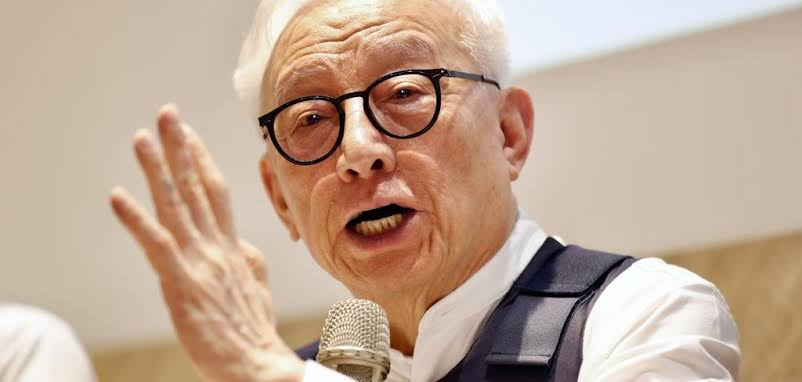
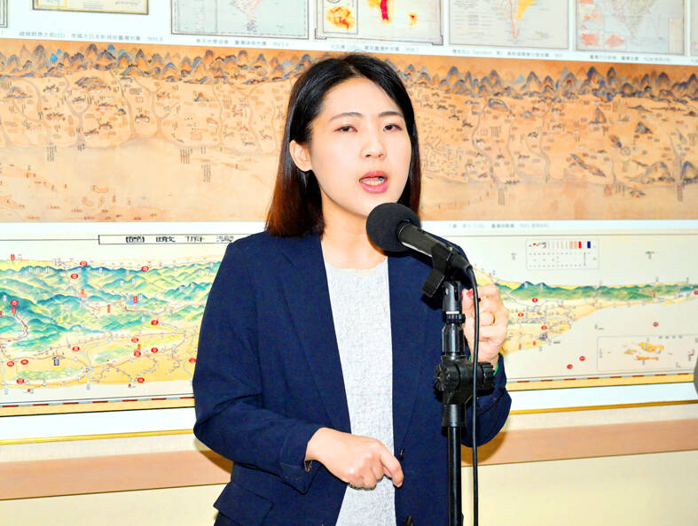
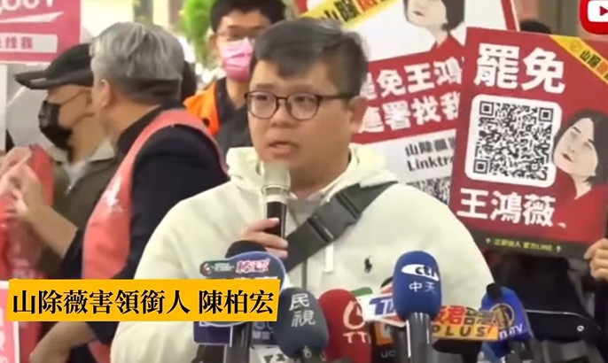
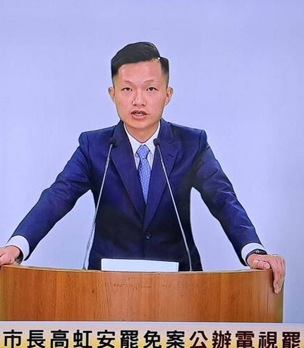

罷免說明會重點摘要
本網頁所有文字皆是使用免費的語音轉文字軟體以及Gemini CLI自動摘錄重點產生，原汁原味，完全無人為修改。
主題：第七選舉區罷免說明會

曹興誠 (罷免領銜人)
- 指控國民黨立委「親共賣台」：核心證據為傅崐萁總召帶隊會見中共統戰頭目王滬寧。認為此舉是親共行為，且回台後便推動有利中共的法案。
- 批評「國會擴權法案」破壞民主：指稱國會改革是「擴權」，將使立法院變為「太上皇」機構，侵犯全民隱私，並可能將國家機密洩漏給北京。
- 譴責立法程序不公與暴力：批評國民黨拋棄正常協商程序，以「暴力、專制」方式強行通過法案。並指出徐巧芯在過程中有咬人、踢人等暴力行為。
- 強調罷免是公民自發行動：反駁罷免由民進黨策動的說法，強調自身過去為藍營支持者，且行動主力來自「青鳥運動」的年輕人。

徐巧芯 (被罷免人)
- 反駁「親共」指控，強調自己「反共」：表示長輩曾參與剿匪，自己也敬重國軍。反指曹興誠曾與中共高層會面，才是「舔共始祖」。
- 辯護國會改革的必要性：主張國會改革是為有效監督政府、防止官員說謊，為民主國家常態。反擊稱曹興誠反對是怕過往之事被揭露。
- 質疑曹興誠的誠信與動機：質疑其捐款承諾未兌現，並批評他曾為避稅放棄國籍、入籍新加坡，是「中華民國的背骨仔」。
- 指控罷免為民進黨策動：稱民進黨總召柯建銘早已開始規劃罷免，曹興誠只是配合演出的「附隨組織」。
完整文字稿 (點此展開/收合)
現在進行第七選舉區罷免說明會。
首先請領銜人曹興誠先生上台進行第一輪說明。
請領銜人曹興誠先生上台進行第一輪說明，請開始。
主持人好，各位聽眾大家好。我是曹興誠，是罷免徐巧芯的領銜人。那麼距離我們7月26號投票只剩一個禮拜了，這時候我們可以看到國民黨就用盡一切的謠言，來想混淆罷免案的本質。我們知道這個罷免案基本上就是我們要抗共保台。那麼為什麼要抗共？因為這些藍營立委已經被親共的賣台。那麼他們有沒有親共呢？他們實際上是明目張膽的親共，一點不掩飾。我們看這張圖片，大家都已經看得很清楚，就是傅崐萁在去年4月26號帶了16個藍營立委到北京朝拜王滬寧。王滬寧他是中共的統戰頭目，政協主席，他主要的目的就是要來顛覆台灣，統戰台灣。所以你跟這個統戰頭子去會面，到底幹什麼？他們是不講的，他們只是說去交流。那麼這個交流他們是認為很得意洋洋的。那我們看看他們在一起拍照的場景，他們根本是完全不掩飾的。所以親共他們是不否認的。那麼接下來親共，他說親共是交流，交流又有什麼錯呢？我們看他從北京交流回來之後，他們做了什麼事情？第一個他們就發動這個叫做國會擴權法案。這國會擴權法案是想把立法院變成我們台灣的太上皇機構。根據這個擴權法案，我們每個人只要你在任何機關裡面做事，不管公司、機關甚至軍警單位，只要立法院要求你，你就要去報告。他問你什麼你就必須回答，不可以隱瞞。那麼這個對於我們所有的隱私當然就是侵犯。那麼這個很可怕，就是說你把我們台灣所有的隱私秘密通通拿去，你要幹什麼？毫無疑問的他們要去藉交流的名義，把我們台灣所有的秘密都交流到北京去。那麼中間他說我們得了這麼多秘密，我們是要有保密的義務，可是他寫說要保密沒有罰則。那麼他們叫我們去報告，那麼如果他們覺得我們不尊重他，沒有報告全部的事實，他可以對我們連續的罰款，從一天一萬到一天二十萬就連續的罰款。那麼這個來講當然對我們所有的台灣的隱私、我們的秘密、我們的國防造成巨大的漏洞。那麼這個當然送到這個案子，送到憲法法庭去以後，當然是被否決了，因為這個不合憲。那麼這些人被憲法否決以後，他們做什麼事呢？他要癱瘓我們的憲法法庭。我們現在這個憲法法庭有八個大法官，可是他們立了法說，要否決立法院的起案，需要十名大法官出席，要九名同意才可以宣布他的違憲。那麼也就是說，他們廢除了憲法法庭，變成他可以立法獨裁，沒有制衡。那麼今天這個國民黨每天在說，他們留在立法院是要制衡民進黨，可是他們在廢除憲法法庭，就是要廢止對他們的制衡。就你只要制衡別人，不讓別人制衡。那麼另外呢，這個癱瘓憲法法庭之外，他們還馬上修改這個選罷法，希望了以後，我們罷免他變得非常不容易。那麼在這個修法的過程當中，我們要注意到很重要的事實。大家看這個是，我們正常一個法案提出來，會成立或者修正，程序非常冗長的。經過這個程序委員會一讀，然後委員會審查，也會開公聽會，黨團的協商二讀，然後逐條審查三讀等等，過程非常冗長。我個人曾經修改過兩個法，一個就是把專利法除罪化，另外就是修正這個刑事訴訟法，導入訴訟法。這兩個法案我因為參與修正，都花了非常多時間，因為你要跟每個委員去溝通，每個委員他都有他的意見。所以修正這個專利法，花了我一年半的時間。那麼修正的刑事訴訟法，花了我超過兩年時間。所以這是正常的立法程序。可是我們看現在國民黨立委在立法院通過這個法案，他跳脫所有這些正常的程序。他是不讓立委知道內容，直接就進到三讀，完全違反程序正義。那麼這個當然是民進黨立委當然不答應，所以後來他們就發動暴力的立法。你看我們在立法院，看來很多打人，像我們徐立委咬人、踢人、拿水瓶砸人，都是因為他們違反程序正義，而強制通過這個立法。那麼今天國民黨罵說，民進黨是想獨裁，可是事實上他們在立法院，他是獨裁的，不只獨裁，而且是暴力的，他是想跳脫任何制衡的。所以這個是我們要了解，就是說在立法院發生的情形，就是完全違背我們民主程序的。所以今天如果說大罷免的召集人是誰呢？當然是傅崐萁。因為這些獲權、不遵守程序正義，都是傅崐萁帶的。中間還有一個很特別的現象，就是說我以前立法的時候，我們立法委員每個人都有意見，每個人都有主見。可是現在國民黨在立法院強行暴力立法的時候，他們這些人通通沒有意見，甚至法案內容他都不看，只要傅崐萁一聲令下，他們就像鷹犬一樣，打了一個鷹犬一樣，一哄而上。這個已經不是立法了，這是變成軍事行動。這個大家要注意，這是軍事行動。而且立法委員不表示任何意見，他就失掉做立法委員的資格，他變成走狗變鷹犬，變成傅崐萁指導下的小弟，就像黑道大哥一聲令下，其他小弟一擁而上。這是很可怕的一個亂象，就是把我們立法院變成一個黑道的私刑堂。這個大家能不能接受？這個不能接受。所以我們大家今天站出來要罷免他們。那麼今天國民黨講說，這是賴清德發動的，因為他選輸了不服輸，然後要消滅在野黨實行獨裁。跟各位講這通通是胡說八道。為什麼呢？我就是藍的。我2008年還投票給馬英九，這是我一生所犯的錯誤之一。那麼在我們罷團裡面，不是只有我是藍的，我們的邱衛邦將軍、余北辰將軍、還有我們的王小棣導演，他的父親是大名鼎鼎的王昇上將，就是我們藍營中的精神領袖。所以我們這麼多藍的跳出來，要罷免這些藍營立委，這表示他不是什麼藍綠對立，也跟賴清德無關。事實上賴清德有辦法指揮得動我嗎？柯建銘能指揮得到我嗎？是吧？我們這些罷團、我們的志工，基本上就是看到國家在立法院亂象，我們感到國家的國安面臨很大的危機，所以我們今天站出來抗共保台，這是我們大罷免真正的主題。那麼現在今天國民黨面臨大罷免很慌，一直在扭曲造謠，希望把這個導成所謂藍綠的對立。如果講顏色的話，我必須講，這次大罷免的志工主要來自於青鳥，因為看到傅崐萁在立法院毀憲亂政，這些年輕人著急站出來。我們有青鳥活動，在青鳥活動慢慢衍生出來，各個罷團的主力。這完全是民眾自動自發出來罷免，是為了救國家，為了抗共為了保台，這是我們的主題，真正的大罷免的主要的原因，希望大家要清楚，不要被國民黨誤導。國民黨現在講什麼，什麼都要挑賴清德。賴清德剛開始他是不贊成罷免的，民進黨剛開始他不贊成罷免的，是因為他們覺得說，不想跳入藍綠對抗，不想中了國民黨的宣傳，所以他們剛開始他們是不參加的。那麼可是我們志工、我們罷團、我們這些對共產黨有瞭解的，我們站出來為了保衛國家，為了對抗共匪。那麼所以今天的大罷免是一個，就像我們高大成法醫講的，是我們繳納稅，我們納稅錢不是用來養共匪的。今天國民黨每天澄清，說我不要把我抹紅，不要把我怎麼樣，可是你就是親共，你就是來賣台。那麼至於說他們怎麼樣的紅，我在下一個下一段裡面，我會跟大家再解釋，謝謝。
接下來請被罷免人徐巧芯女士上台進行第一輪說明。
請被罷免人徐巧芯女士上台進行第一輪說明，請開始。
各位收看轉播的好朋友們，以及主持人曹興誠先生，大家午安大家好。我是立法委員徐巧芯，感謝各位在百忙之中，還來關心這場攸關中華民國民主的罷免投票。首先呢要拜託各位好朋友們，只要你是在7月26號星期六有空的，請你記得出門投票投下不同意罷免。那麼曹興誠先生剛才說，這次的罷免是為了要反共。我要告訴曹先生，我的叔公還有我的外公，參加過三次的剿匪戰役，我把他們視為我心中的英雄，所以我當然也是反共的。因此我更是敬重國軍，才會在立法院幫軍人爭取志願役的加給至三萬塊，還有包含我們力推國軍在受訓的期間不用被扣假，如果有休不完的假，國防部要有制度給予薪資補償。像先前呢軍人因為壓力太大，所以有很多自傷的情況，我們也要求政府提高了14倍的心理輔導的經費。所以這都是我一整年當中在做的事情。那你說我是親共嗎？顯然就是在抹黑抹紅。那剛才呢曹先生提到了所謂的國會改革，我要告訴他國會改革在很多的國家都是有的。那難道你認為一個政府官員在立法院裡面，可以在備詢的時候說謊嗎？曹先生你支持嗎？另外你應該是因為不敢被監督，怕過往的好事都被揭露出來，所以才反對國會改革才說它是擴權法。另外我從踏入政壇開始，我就堅定的反對中華人民共和國對中華民國的侵略，無論是武力或者是認知作戰我反對到底。我從來沒有不敢講，我也可以天天講。但我們做事的人啊要用心維持兩岸的和平跟穩定的現狀。但反對共產黨的制度並不表示反對中國大陸的文化經貿以及人民。而反共也不是每天空口說白話，像曹興誠先生這樣子覺得每天嘴上反喊共，哇吃著火鍋唱著歌難道共產黨明天就倒了嗎？簡直就是癡人說夢在同溫層裡面自嗨。我抓出吳釗燮多年身邊的共諜要求政府盡快處理，我也抓出過中國製的貼牌機器在我們國軍的使用上面。如果過去曹興誠先生指控我是中共的地下黨員，掩護共諜還有集中營都來不及了，我怎麼會揭露這麼多跟中共有關的不法事件呢？這樣子的不實指控都是憑空想像的幻覺。虧你還擔任過國防這個韌性委員會的顧問，雖然我知道你偷懶，所以只當了一次薪水小偷開一次會而已，但提出這樣子妄想式的陰謀論真的相當可恥。你多次聲稱要罷免是因為國民黨有人去了中國大陸見了王滬寧，所以整個政黨都是親中賣台。這一點是無稽之談根本就站不住腳，因為他們到了大陸去是為了賣台灣的農產品，而不是為了個人的私利。如果今天要真的講到黑箱去共產共建共產黨的高層，曹興誠本人就是最親中投共的始祖。在1988年的時候曹興誠就跟江澤民還有曾慶紅一起吃飯，你是被請客的那個對象。所以請問你們當初交換了什麼？請問你們在飯局裡面談了什麼？請問你們做了什麼生意賺了多少錢？至今沒有完整公開過你們的對話內容完全沒有。這不就是自己口中當中黑箱的行為嗎？另外曹興誠先生剛剛他說他是藍的，我作為一個國民黨員我完全不認同你是藍的。你要嘛過去是紅的不然現在就是綠的。因為我們中國國民黨的黨員不會背叛中華民國。再來如果你說有人見了王滬寧就等於全黨賣台，那你40年前就在賣了呀，賣得很開心賣得很快樂可以說是舔共賣台的始祖鳥。至於你現在是不是跟中共還有做內應這個我們就不得而知了。況且賴清德他有沒有訪問過大陸呢我給大家看這個是賴清德，旁邊的就是上海市長楊雄，他也跟一大堆的這個中共官員見過面。賴清德有沒有說過親中愛台？他有沒有說過想跟習近平一起吃喝珍珠奶茶還有蝦仁飯？請問曹興誠先生你有沒有譴責過賴清德他是親中賣台呢你從來沒有。再來你又說我們不愛中華民國的原因叫做呢，因為我們會罵中華民國的總統。你這麼說的哈你說你們每天罵中華民國的總統賴清德代表中華民國你們用一切力量來罵他這樣叫愛國嗎？這是什麼樣的一個民主素質啊？我們罵中華這個中華民國的總統就是中共同路人嗎？那民進黨過去是怎麼罵馬英九罵蔣經國罵蔣中正的難道你在指控他們通通都不愛國嗎？所以我要講的是賴清德最近他的這個分裂談話裡面他說要把意見不同的人打成雜質，他還說呢這個難道不該罵嗎他還說呢這個民主不是投票表決贏的就贏，不是哦不是這樣子哦這樣的說法難道不該罵嗎？甚至他還說一萬塊錢哦買了菜就沒有了這樣子難道不該罵嗎？最誇張的是最近因為南部的這個天災，他竟然在已經有災民摔死爬屋頂的情況之下他還叫我們的這個民眾，叫我們的民眾繼續去爬屋頂哦這個我一定要給大家看看來，大家看已經災民不敢爬屋頂了他竟然還說，你們要自己爬啦結果導致了更多更多的災民他們受傷了。在民主國家裡面要求政府做的更好是民意代表天經地義的事情，怎麼在你的面前就變成不愛國了呢這是什麼樣的民主素養市井小民都懂得道理但是你自認為大企業家你卻完全在瞎掰。再來你多次主張國民黨的立委都是傅崐萁的附隨組織，實際上你才是真正的「傅柯」組織柯建銘的柯配合柯建銘賴清德推動惡罷。國民黨立法院的黨團即便傅崐萁是總召我們都是透過民主的制度討論，然後才決策的反而民進黨的柯建銘總召他公然說只要投給哪一個立委啊投給大法官提名人劉靜怡就要將對方開除黨籍而且理由竟然是大法官不能罵民進黨啊。所以這種大法官曹興誠還挺的下去嗎早就已經成為民進黨的形狀了吧。這才是毀憲亂政的「傅柯」組織。而且柯建銘公開說過2月1號我上任的第一天他就開始規劃大罷免了。巧了曹興誠也是哎而且呢罷免領銜人是他的這件事情，早在臉書上面柯建銘率先宣布這不就代表你們是上下交相賊嗎？所以你們就是「傅柯」組織的議員跟賴清德啊柯建銘沈柏洋八炯閩南郎之流混在一起。至於你過去說傅崐萁是病毒好然後我說好你認為我後來哭倒在病毒的懷裡，這是你只看了特定媒體所以有的這個誤解當時花蓮發生了讓大家都很難過的大地震，我跟立法院的幾位同事我們決定共同的捐款給我們的花蓮的這個災民。但是呢因為我的關係所以導致了很多的這個很多的這個民眾他們可能最後只從媒體上面他們看到的是至今與我本人確定已經無相關的相關的事件所以當時我感到非常的愧疚我覺得，如果我沒有去參加的話是不是我們的災民的心聲就能夠被媒體報導？如果我沒有參加的話是不是，這些立法委員跟議員他們的意見就能夠被報導出來讓他們的問題能夠得到解決？而傅崐萁總召他是花蓮的立法委員，我離開時看到他我對花蓮的災民感到非常愧疚，所以落淚了那他也作為地主禮貌性的安慰我政治不應該脫離人性。在像我在這個辯論的场合我不会也不打算去提你百花齐放的私密事件。换个角度来说你过去拿我当时对灾民的歉意作为攻击的手段难道不卑鄙吗？接下来我有一些问题要请领衔人曹兴诚回答。请你不要说哎你不是被罢免的对象所以逃避问题。因为如果领衔人满口谎言那要如何让民众相信你罢免的理由的真实性呢？第一个问题2022年的8月你曾经说要捐30亿给国防部请问钱捐去哪里了？2023年有人怀疑你根本没捐你马上又说要捐2000万，结果现在又隔了两年请问当初的承诺捐了没捐给谁用在哪里该不会捐给罢免团体你就觉得等于国防吧？你也曾经夸口要捐6亿给黑熊学院再加码10亿说要训练300万名的黑熊勇士，30万的神射手请问在丹娜斯台风肆虐南部的时候你们就在附近绕境搞大罢免，那我我请问说好的300万黑熊勇士呢？他们在哪里呢台南居民最需要帮助的时候怎么没有看到300万的黑熊勇士呢？他们怎么没有来协助民众呢？甚至曹兴诚先生说放台风假没有道理。亲爱的我们台湾的乡亲朋友啊像这样的人作为罢免的领衔人你们能够接受吗？在他的心里这么冷血的发言比台湾人的人命罢免比台湾人的人命还要更重要吗？第二个问题说起对国家的背叛，曹兴诚才是真正的中华民國背骨仔。我徐巧芯从出生到现在只有中华民国的护照 但是呢在2018年的時候啊，我们可以看到曹兴诚他都还在喊什么呢 他都还在喊，他说大陆也可以来参加我们的选举啊 我是百分之百反对这件事情的。之前他在中华民国政府没有许可之下，就把晶片的技術偷偷帶到大陸 還鬥掉了台積電現在重要的人物張忠謀。后来他放弃了国籍 拿了新加坡的护照背叛了台湾 为什么呢 是不是还是因为钱钱钱钱钱？为什么能赚钱的地方就有他呢 毕竟新加坡只要20%的税率 而中华民国要交40%？是不是为了逃税或者是避税 没有人相信 那如果你说不是的话，现在突然回到台湾想要做反共大将军，大家不觉得很可疑吗 说呢要投票 投投投投投一直投到统一为止。然后到现在呢 左手赚红钱 右手赚绿钱 那曹兴诚就是一個投機份子。你各位要注意啊 要小心他啊 他随时都有可能再一次的背叛国家。毕竟背叛这种事情 无论是出于私生活或是公领域 背叛了一次就会有第二次就会有第三次。说不定哪一天战争来了 又落跑回新加坡了 就只剩下黑熊跟青鸟在原地哭哭。这就叫做政治渣男。所以呢 我要拜托各位好朋友哦 你们可以看到心里没有人民只有自私自利搞政治的人，那這樣子的人能夠擔任領銜人 要罷免我在立法院裡面，認真問政爭取軍人權利跟兩岸和平的徐巧芯嗎？請曹興誠先生等一下不要迴避我所提出的兩個重要的問題 謝謝大家。
接著進行第二輪說明 請領銜人曹興誠先生上台進行第二輪說明。
請領銜人曹興誠先生上台進行第二輪說明 請開始。
大家好 剛剛徐巧芯花了很多的力氣在攻擊賴清德 攻擊柯建銘 攻擊我。其實這樣是沒有意義的 因為你才是被罷免人 你要說明你為什麼不該被罷免。那麼徐巧芯說我以前什麼親戚以前也是抗共的，你以前親戚抗共的不代表你現在就是不親共。那麼我們看到太多的國民黨人，上次2008年馬英九當選總統以後，就開始帶著國民黨全面往紅的路上去走。所以今天以前你說什麼反共 今天不代表你不反共。那麼他說他做了很多什麼事 這個事有一點他沒辦法迴避。就像我剛剛講的，這個立法程序是很冗長的 是要經過很多協商討論的。可是為什麼你們這些國民黨立委這次在立法院通過的每個法案都是暴力立法，就是專制立法 完全不遵守程序正義。有些立委連這個條文都沒看過，竟然就跑到三讀去了。這是從來立法院沒有過的荒唐的事情。在這種過程當中，你徐巧芯有沒有站出來說，我不同意這樣的做法，我要反獨裁，我要遵守程序正義？你徐巧芯有沒有？沒有。你是跟著這個傅崐萁的指令，去咬人，去踢人，去用水灑人，種種粗暴的動作。你們是在用暴力、專制的方式來立法。這個你徐巧芯怎麼回答？你跟國民黨立委講，哎呀，我工作很認真，我怎麼怎麼樣？我跟各位講，匪諜工作最認真。這職棒裡面有打假球的，打假球的人比正規打球的人更認真，詐騙的人比正常人工作更認真。所以這個國民黨立委現在講，自己多認真多認真，沒有意義。重要的我們就要問說，你們為什麼在立法院這麼粗暴、專制、跳脫程序正義在立法？這個是我們要問的，究竟為了什麼？而且你們身為立法委員，在臺北市選出立法委員，你沒有代表我們臺北市講任何意見，你們就跟著這樣粗暴立法。這樣你交代了過去嗎？再講你個人怎麼樣怎麼樣，其實都沒有意義。事實上，藍營立委在立法院所作所為，已經引起整個國際的關注。我們可以看到，在今年3月，美國參議院聽證會，參議員蘇利文就講，臺灣人你要注意，國民黨現在刪減國防預算，是在做一個非常危險的事情。這是我們國際友人對國民黨在國會亂象都感到擔心。現在除了我們的盟友對我們的情況感到關心之外，我們的敵人對大罷免也感到關心。臺灣人不可以支援大罷免。朱鳳蓮6月25日發表講話，她講的是對綠色獨裁恐怖政治的強烈不滿。綠色根本沒有獨裁的基因。獨裁是中共的法寶，而且透過國會擴權法案以後，真的會把我們放在恐怖統治之下。我們所有的隱私都不見了，都是被它看穿了。這是恐怖統治。我曾經講過，如果徐巧芯罷不了，我活不下去。什麼意思呢？就是我們所有的隱私都不能夠存在的情況下，這個社會怎麼活得下去？包括你的私人的醫療記錄，你的財產，你跟別人任何商業的合約秘密，通通都讓他知道。這個大家怎麼活得下去？所以該強烈表達不滿的是我們，是我們的志工，是我們的罷團，我們才深感不滿。所以今天在談到說，抹紅不抹紅？我要讓大家瞭解，國民黨每天跟大家講說保護中華民國，它是騙你的。我舉個例子，這是什麼呢？這叫中華民國的墓碑，這墓碑被中共立在南京中山陵，意思是說你中華民國就滅亡了。那麼這是對中華民國極大的侮辱，也是誤導國際事情，以為我們中華民國不再存在。請問，這些國民黨天天去交流，有沒有任何人去抗議，跟中共說，你不應該說我們中華民國不存在，請你把這個墓碑拿掉。有沒有？沒有。那麼我們知道2008年馬英九一直推動兩岸的交流，交流了十年，帶來什麼成果呢？2018年中共修改憲法，說臺灣是中華人民共和國不可分割的領土，這就把我們臺灣的土地全部沒收了。臺灣的土地現在按照公告現值，最少值134兆臺幣，這麼龐大的財產被它憲法一句話就把它沒收了。如果我們臺灣變成它的領土，那麼我們住在臺灣的2300萬人，就變成說侵佔中共領土的侵佔犯。不但我們的財產沒了，我們還變成罪犯。這麼大的事情，國民黨有沒有去抗議？沒有。天天交流，從來沒有代表臺灣說，你這胡說，臺灣不是你的。反而倒是我們賴清德總統跳出來說，對不起，兩岸關係是互不隸屬，國與國互不隸屬。所以國與國互不隸屬就直接駁斥了中共說臺灣是它領土的這種主張。結果呢，我們的國民黨馬英九以降，通通跳出來罵，說你這個新兩國論，你在推動臺獨，你在挑釁。我們保護我們的家園，保護我們130兆的財產，保護我們的國土，在國民黨眼裡面我們變挑釁。各位大家評評理啊，這種國民黨你說他還不是中共的同路人，誰是中共的同路人呢？所以今天徐巧芯講說我們要抹紅他，講這些，其實呢，根本上他們知道這都是事實。那另外呢，講到徐巧芯，我必須講，這位立委呢，當然是嘴巴很壞很刁鑽，他問我說，我以前見到江澤民、曾慶紅講了什麼，1994年，我是跟他們兩個吃過飯，我是問那個曾慶紅，我說請問你怎麼看中華民國？他們都不講話，我說你們是不是認為中華民國已經消滅？他說對我們普遍就是這種看法，我說那你麻煩了。如果我們消滅，那我們就是鬼啊。人鬼殊途陰陽永隔，請問你怎麼談統一？那隻剩下說騙鬼收屍招魂入殮，你這是騙我們嗎？如果你不認為我們是存在的實體，你所有對我們的講話都是騙。這是我跟曾慶紅講的，徐巧芯你要不要聽聽看？賴清德2014年到上海復旦大學演講，一開始他講臺灣有權獨立，臺獨萬歲，他能夠捍衛我們中華民國主權，後來我支持賴清德，因為他捍衛臺灣主權。所有這些國民黨跑到中共不曉得交流了多少遍，都是吃吃喝喝，有沒有替中華民國講過話？有沒有替我們捍衛我們領土的主權？沒有。所以今天徐巧芯講說他反共是騙人的。最重要就是說為什麼傅崐萁在立法院很粗暴的很專制的推動法案的時候，你一聲都不吭，你還跟著大家去打拳架，咬人踢人，用水潑人，種種的惡劣事蹟。你算是一個臺北市立委嗎？你有資格做臺北市立委嗎？所以你們在跟著打拳架，完全忽略司法的程序正義。這個是你們對不起臺灣的地方。你不要去攻擊賴清德，攻擊我，或者攻擊柯建銘。今天被罷免的是你，你要檢討。你對這些你們違法亂權的行為，如果不加以檢討，你是要被罷免的。今天大家選民只剩一個禮拜，大家看清楚。這次不是藍綠對決，是抗共保臺對親共賣臺的對決。如果說要有顏色的話，我們這次的罷免是從青鳥活動開始的。我們對抗了紅色的這些立委。如果要講顏色的話，應該就是青紅對決。不是藍綠對決，我本來就是藍的，我們一堆藍的。我們要罷掉這些藍營立委，因為他們已經變成紅的。所以今天是青紅對決，跟賴清德無關，跟柯建銘無關，跟共產黨有關。所以這個大家一定要認清楚。這次如果不把這些立委罷免掉，他們回來會加倍奉還。你看徐巧芯最近哭哭啼啼的，因為怕被罷免。可是他也曾經講過，他說我不是佛系立委，我是佛擋殺佛，神擋殺神，我要讓人民看到血流成河。這是他講的，血流成河。你要留著徐巧芯，要注意血流成河。謝謝大家。
接下來請被罷免人徐巧芯女士上臺進行第二輪說明。
請被罷免人徐巧芯女士上臺進行第二輪說明。請開始。
大家有沒有發現，在剛才的十二分當中，曹興誠先生完全沒有回答我的問題。為什麼呢？因為真相只有一個，說了一個謊就要用更多的謊言來圓。來，我給大家看一下，這是國防部回覆的信件，他證明瞭曹興誠至今都沒有捐款。我們可以看到的是，109年到114年度均無收受曹興誠的捐款紀錄。所以一個滿口騙人的謊子，那我想這樣子的人一開口就是在騙人，而且我還是聽不懂，他也沒有說，為什麼好好的中華民國他不愛，偏要跑到新加坡呢？作為一個罷免的領銜人，沒有誠信、沒有底線，只會說謊。你對我的批評跟罷免的理由，那又要如何取信於民呢？大家會發現，剛才的十二分鐘裡面，對徐巧芯的批評只有抹紅、抹紅、抹紅、再抹紅。對每一個人他都認為是中共同路人，只要跟他的想法有一點點的不一樣，你就是中共同路人，這就是曹興誠的論述。而且剛才講到他跟共產黨高層的吃飯，不要去混淆視聽了，我剛剛說的是1988年跟江澤民吃飯，而不是1994年，請不要偷換概念。1988年跟江澤民到底吃了什麼飯，談了什麼，目前完全沒有記錄啊，沒有記錄你當然可以空口說白話。至於呢，你當時剛才指控的，我們在國會裡面的亂象，我要問，為什麼立法院你會覺得亂呢？因為民進黨在亂，柯建銘在亂，你不知道嗎？現在大惡霸已經變成了大造謠、大雙標。曹興誠指控我們在國會衝突推擠，事實就是國民黨當時為了修案、排法，我們夜宿在門口三天三夜，循規蹈矩的等待開會時間，可是開會的前一天晚上的9點，民進黨他竟然拿椅子去破壞議場，砸碎窗戶進去佔領立法院，目的只是要讓隔天的會議沒有辦法開。我要請問，這些執政黨的立法委員，也要請問曹興誠先生，你覺得立法委員不開會，甚至把議場弄得一團亂，這是一件對的事情嗎？我們可以看到議場被破壞成什麼樣子，有用機車大鎖加三秒膠鎖住了媒體的採訪區，也有用鐵鍊和椅子將所有的大門拴起，還大言不慚的在網路上面直播炫耀，這種做法讓臺灣的民主蒙羞才是真正導致衝突和推擠的原因。曹興誠剛剛要跟我講暴力，他所說的很多都是錯假的，但是有一件事情是真的，陳菁徽委員在國會改革法案的時候，站在主席臺上面，竟然被民進黨的鍾佳濱委員撲倒，第一個，這有性騷擾的大幅嫌疑，第二個，後來陳菁徽委員的背面全部都是瘀青，而陳菁徽委員受到鍾佳濱委員這樣的攻擊，還上遍了各大的新聞版面，包含是世界的版面。請問曹興誠先生，你的眼睛還好嗎？你瞎了嗎？你沒有看到一個女生就被民進黨的立法委員活活欺負嗎？請問為什麼只要碰到民進黨你就不談呢？你還敢說你是藍的，你就是綠的。那講到暴力，絕對不能漏掉這位女士，叫做民進黨的邱議瑩，我想沒有人不記得她曾經踹破法務部大門的名場面，誰不記得她比過中指，誰不知道她最近拿了扇子去扇了羅智強委員的臉，還判賠20萬。那她現在極有可能代表民進黨參與高雄市長的選舉，所以按照曹興誠的說法，最應該被罷免的是誰呢？是邱議瑩。你有聽到曹興誠說，國會亂象，所以我要罷免邱議瑩嗎？沒有，沒有，完全沒有。所以她現在邱議瑩她反而還可以趴趴走來罷免其他的人，這個是一件非常奇怪的事情。那所以我也要特別強調剛才曹興誠先生所說的國防預算，今年的國防預算編列的是史上最高，高達6740億，但刪除的比例是近年來的最低，甚至我們在委員會當中刪除無人機預算97%的最關鍵一票，是民進黨的王定宇委員。請問曹興誠先生，在你的眼中他也是中共同路人嗎？再來我們看到罷免團體批評國民黨的委員，包含我在內正在掏空臺灣，事實上民進黨錯誤的能源政策才是在掏空臺灣，以前臺電是可以自己賺錢的，但在民進黨執政之後臺電不斷的虧損，他就像是一個黑洞一樣，把人民的納稅錢不斷的吸進去，這才是真正的掏空臺灣。曹興誠董事長，如果你真的這麼在意國安，你要知道這樣的能源政策，如果兩岸開戰了，我們的LNG天然氣船進不來，可能在一個禮拜之內全臺灣斷電，所以他不只是金錢上的掏空，他更是國安上的掏空，奇怪，聲稱反共的曹興誠，怎麼完全不在乎臺灣的安全啊？再來面對川普的關稅要求，近期我們可以看到臺積電也跑到美國去了，未來甚至農產品可能會零關稅，但是曹興誠他卻是怎麼說的？他說罷免才是重中之重，關稅高低干你什麼事？這樣子的說法是非常自私自利的，代表有錢人根本不在乎普通人民的生活困境，只是自私自利的玩弄政治。所以我要告訴大家的事情是，過去我們都說臺灣最美的風景是人，但是現在臺灣的風景只剩下青鳥，這就是曹興誠、賴清德、柯建銘所發起的惡罷之下，臺灣已經變得越來越加的分化跟對立，開始在自己的內部找敵人，目前已經有多起民眾，他只是在外面拍照、攝影、直播就被謾罵，然後拍上去之後再到網路上面公審的事件，甚至連民進黨的立法委員郭昱晴都跟著一起獵巫，昨天甚至還發生什麼事呢？國民黨的立法委員葉元之，因為這個罷免方對他不滿意，所以吐他口水，這是我們要的臺灣嗎？這是團結的臺灣嗎？賴清德總統的團結談話有團結大家嗎？曹興誠這個董事長說的這個所謂的他們要做的罷免，只是讓臺灣社會更加分裂，讓我不禁懷疑你到底是不是在亂臺，到底是不是跟著共產黨沆瀣一氣，所以至於弱化臺灣的這個國安的指控，跟我再立法院是背道而馳的，那我認為要強化國安必須要富國強兵，要強兵一定要有足夠的志願役的軍人投入軍力，在我修法之前呢，二等兵進來只能領三萬六千塊錢，那現在呢，我們可以領到加三萬塊，就變成是六萬六千塊錢，這導致了過去每年有五千名的軍人退伍，在他當時只能領三萬六的時候，因為你要犧牲你的自由，也只能領這麼少的薪水，這項富國強兵的修法，民進黨在審案子的時候竟然全數反對，不尊重軍人，不讓軍人有合理且應有的待遇，這才叫做弱化國防，剛才曹興誠拿著這個板子不斷地在講說，程序正義的時候，他有沒有想到我們按照程序，讓我們的軍人有好的待遇的時候，就是在強化國安，你作為一個反共的人，你卻不關心我們國軍的尊嚴，這還叫做反共嗎？所以我要告訴大家的事情是，負責任的報告，這一年來我們在立法院做了哪些事情，推出了什麼法案，首先我過去的質詢次數有102次，提出的法案92案，國會評鑑兩次都是六星的立委，我們推動了還假於民五天，因為過去民進黨砍掉了人民的七天假，我們終於還給大家五天的國定假日，包含像是行憲紀念日跟聖誕節，也包含了小年夜，讓大家可以提早回去跟家人團聚，那麼臺灣的勞工工時，可以說是全世界數一數二的高，本來就應該讓勞工能夠有喘息的機會，可是民進黨也全數的投下了反對票，全數投下了反對票，他們拒絕讓小老百姓能夠多放五天假，再來我們成功的推動了普發現金一萬元，這叫做還稅於民，絕對不是執政黨所說的掏空臺灣，否則蔡英文時代的蘇貞昌，馬英九時代也都有發現金或是消費券，那我們的國庫被掏空了嗎？並沒有啊，民進黨的立法委員當時還在臉書上面，不斷的慶祝說，經濟紅利全民共享，比起補貼像是黑洞一樣的臺電，普發現金才是更公平的，所以如果補貼了以後還是要漲電費，那補貼不過是補辛酸的，再來賴清德總統說，這個發一萬塊錢買個菜就沒有了，卓榮泰院長說哎呀，只能買遙控飛機或是冰箱，這完全叫做不知民間疾苦，莫忘世上苦人多，一個人一萬，一家四口就是四萬，對於許多人來說，就是一筆重要的生活費用，能夠刺激消費，南韓還有曹興誠的以前的國家新加坡，最近都因應川普的關稅，普發現金給民眾，難道你們認為他們也在掏空國庫嗎？政府這種不把人民的心態放在第一位，才是真正應該要譴責的對象，曹興誠董事長或許你家財萬貫，所以你不在乎市井小民的想法，但是真的真的一般人很在乎，而賴政府如果不願意依法，發放一萬元的現金，這就是跟臺灣兩千三百五十萬人在對槓，我作為臺北市的立法委員，爭取建設經費天經地義，臺北市是一個很棒的城市，但我們需要更多的建設經費，才能讓它再重新榮光煥發，巧婦難為無米之炊，所以我們爭取了臺北市每年新增四百一十六億的預算，可以讓接下來十年的臺北重生，包含了推動捷運的加速，改建一百所的國中小的校舍，市民最需要的長照日照，公托公幼都可以翻倍，所以我們都希望臺北市的建設能夠越來越好，臺北市的民進黨的立委他們全員反對，他們放棄臺北，我們維護臺北，卻是我們要被罷免，這樣對臺北市有公平嗎？所以我必須要講到的是，投下不同意罷免，不只是為了捍衛中華民國的民主而已，投下不同意罷免，也是為了讓韓國瑜院長，不被柯建銘想要搶立法院的寶座的狼子野心而投，投下不同意罷免，更是為了讓蔣萬安市長呢，能夠為了有充足的經費而投，最重要的是投下不同意罷免，是為了自己的權益而投，比方說我們今天透過了，虐兒最高可處死刑，民進黨他全數反對，所以關心自己孩子的爸爸媽媽們，請你要知道，我剛剛所提的五天國定假日，我剛剛所提的軍人加薪，軍警消的這些所得替代率，還有普發現金一萬塊，如果我們被罷免了，會全部被收回，所以巧芯再一次的拜託所有的鄉親好朋友們，拜託各位，7月26號請大家一定要出門投票，我相信人民的眼睛是雪亮的，是能夠明辨是非的，不能因為罷免的規則是比較投票率，而讓少數人的聲音凌駕多數人的支持，所以我要再一次的懇求，我們所有信義南松山的選民朋友，7月26號請記得，無論如何一定要出門投票，而且要拜託大家跟你的親朋好友宣傳，7月26號為了韓國瑜，為了民主的多元聲音，為了蔣萬安，為了徐巧芯，為了你自己的權益，7月26號請你一定要站出來，勇敢的出門投票，這樣我們的民主，這樣我們的臺灣才能有多元的聲音，我們的臺北市的發展也會越來越好，謝謝各位，謝謝。
現在結束第七選舉區罷免說明會，在第八選舉區罷免說明會，將於下午四點開始，請繼續收看。
主題：第三選舉區罷免說明會

陳柏宏 (罷免領銜人)
- 質疑國家忠誠與親共立場：指控王鴻薇隨團訪中，與中共統戰官員會面卻未清楚交代內容，並批評她參與統戰節目、為主張武統的網紅辯護。
- 批評問政不力且漠視選區：引用公督盟資料稱其質詢率墊底，更關心跨區議題。並以大直民宅案為例，指其事前不知情、事後作秀。
- 指控其背棄選民與個人操守：批評她當選議員5天後即「落跑」選立委，並質疑她對配偶的爭議行為（對選民不雅手勢、任統戰組織幹部）未正面回應。
- 指控收受爭議建商政治獻金：指出王鴻薇曾收受基泰建設三十萬元政治獻金，認為其後續提告只是為挽回形象。
王鴻薇 (被罷免人)
- 反駁罷免理由為抹黑、抹紅：認為「親中賣台」的指控是民進黨對所有在野黨立委的複製貼上式政治追殺。
- 強調自身問政表現獲多方肯定：列舉多家媒體與公民團體（口袋國會、台灣國會評鑑）的評鑑結果，證明自己是備受肯定的「優秀立委」。
- 說明政見已落實，為民爭取福利：強調十大政見正逐一兌現，其中「80歲以上免巴氏量表」、「放寬都更容積」、「核電廠延役」等三項法案已三讀通過。
- 將罷免定調為對在野監督力量的打壓：認為罷免的真正原因，是她在立法院強力監督執政黨，因此才遭到反撲與追殺。
完整文字稿 (點此展開/收合)
各位電視機及YouTube網路平臺前的觀眾、市民朋友大家好！今天是臺北市選舉委員會第11屆立法委員臺北市第3、4、6、7、8選舉區罷免案所舉辦的公辦電視罷免說明會。承蒙各位在百忙之中抽空聆聽罷免案之領銜人與被罷免人的說明。本人為此次說明會的主持人廖芳軒委員，同時介紹本會監察小組陳志明先生到場執行監察職務。
在罷免說明會正式開始之前，先將說明會程序規則及領銜人與被罷免人須配合事項提出說明。
1. 本次公辦電視罷免說明會分兩輪進行。領銜人及被罷免人說明時間各為24分鐘，每一輪時間各為12分鐘，依法由領銜人及被罷免人依序上臺說明。說明時間屆滿前兩分鐘，按鈴一短聲。時間屆滿，按鈴兩長聲，應即結束發言，不得以任何理由請求延長。如仍不停止發言時，主持人應予制止，並關閉電源，不予播出。
2. 領銜人及被罷免人參加公辦電視罷免說明會，如今主持人唱名三次，仍未上臺說明者，應以棄權論。如今主持人唱名三次，仍未上臺或上臺說明未滿規定時間提前結束時，應接續由領銜人或被罷免人上臺說明。
3. 領銜人及被罷免人發表說明時，不得攜帶危險物品或有違反公共秩序及善良風俗之行為。
現在進行第三選舉區罷免說明會，請領銜人陳柏宏先生上臺進行第一輪說明，請開始。
主持人，各位觀眾朋友，各位中山區、北松山區的公民同胞，大家早安，大家好。我是臺北市第三選舉區，也就是中山、北松山區的立法委員罷免案領銜人陳柏宏，也就是那位被王鴻薇委員私下派助理肉搜的公民。我們認為與其讓社會透過這樣不正確的方式來認識我本人，我們更願意也非常歡迎在說明會結束之後另行召開記者會，向大家完整的介紹我個人的背景與理念。但今天這場說明會的重點不是我個人，而是王鴻薇委員為什麼不適任，還有他為什麼應該被罷免。
今天基於對立法委員這個職務的尊重，我會稱呼王鴻薇一聲王委員，但接下來我將從國家、地方、個人三個層面向大家具體的說明王委員不適任的理由及背離民意的證據。
首先，我們從國家的層次來談，王鴻薇身為中華民國的立法委員，應該要以中華民國的國家利益為先，但是他剛上任立委，便隨同國民黨黨團總召傅崐萁在未事先向國人報備的情況之下，前往中華人民共和國與多名中共統戰要角會面。至今，王委員仍然沒有辦法清楚的交代，這趟中國之行究竟談了什麼，協商了什麼，又對中華民國的國家利益帶來了什麼樣的影響，更重要的是誰授權他代表中華民國去和中華人民共和國進行這些對談。
我們臺灣人民所能夠看到的是以王鴻薇、傅崐萁為首的這些立委，在面對中共統戰官員聲稱兩岸同屬一個國家的時候，他選擇微笑以對，並且在回國之後，以不符合程序正義的方式，強行透過包含立院職權行使法、選罷法、財劃法及憲法訴訟法等等多項爭議法案，這些法案實質上癱瘓了中華民國的國政。
我必須說這不是王委員的第一次，王委員過去在市議員任內，就多次以所謂臺灣時事評論員的這個身份出席中共統戰節目《海峽兩岸》，配合中共的口徑矮化中華民國的國格，還有散佈疑美論。
最近王委員又在媒體上為主張武統的中國配偶「牙牙」發聲，他甚至引用曾經為言論自由殉道的鄭南榕之名，為牙牙武統臺灣的言論辯護，不禁令人懷疑，委員，您真的熟讀國民黨的黨章嗎？
我這邊有一張字卡，上面是中國國民黨的黨章第二條，我們可以看到重要的地方是什麼？重要的地方是黨員應實行民主憲政，反對共產主義。但王委員作為中華民國的民意代表十餘年，卻不顧民意反彈，堅持多次在未告知國人的情況之下前往中國，並且在中共的黨媒上發表批評中華民國政府的言論，難道王委員心目中的那個國家，不是我們腳下所踩的這塊土地嗎？
王委員的這種親共立場，不僅背棄了國民黨的傳統支持者的期待，也傷害了所有為中華民國奮鬥的人，更嚴重踐踏了曾經信任他，投票給他的選民。王委員利用中華民國所保障的言論自由，附和一個長年威脅我國主權的敵對國家，是什麼樣的民意代表會與敵國的立場高度同步，這些舉措都令人感到非常擔憂。
王委員過去總是以揭弊、監督等等的行為自居，但事實是，在野黨過去在立法院的所作所為，美其名曰監督執政黨，但是實際上是濫刪、濫凍預算，繞過委員會的實質審查程序，將從來沒有討論過的法案，直接送進院會強行表決透過。各位，這不是民主，而是民主程序上的倒退與法治精神的淪喪。國民黨是一個百年的泱泱大黨，在這次的選舉中，國民黨成為國會的最大黨，加上民眾黨的支援，只要循程序好好的投票，好好的討論，所佔的優勢是絕對可以在立法院提出、修改或推動任何福國利民的法案。
然而，目前在野黨所主導透過的法案都是具有重大爭議的，包含前面講的立院職權行使法與刑法的部分條文、財劃法、憲訴法、公職人員選舉罷免法的修正案、警察人員人事條例，還有最近仍然沸沸揚揚的114年度中央政府總預算審查總報告。以上都還不包括王委員因為民意的反撲而臨時撤案的其他法案，我就不先一一的贅述，但由此可見，在王委員以及其黨團的心中，黨意與政治算計是凌駕於國家利益與選民的福祉之上。這真的是一位立法委員應該有的合格表現嗎？
接下來，我要從地方的層次來看王委員為什麼不適任。王委員不僅僅是中山、北松山的現任立委，過去王委員曾經擔任長達17年的中山、信義區市議員。以這樣的資歷來看，應該是代表王委員深耕在地，擁有充分的民意基礎作為其施政底蘊，並且將選區選民的利益擺在首位，而不是僅僅屈從國民黨的黨意綁架。我們所期待的區域立委應該是要超越黨派，為在地居民爭取最大的福利，而不是只是單純的求個人政治生命的延續。
2022年11月26日，王鴻薇委員當選臺北市議員。僅僅5天後，12月1日，王鴻薇委員便火速宣佈參選中山、北松山區的立法委員補選，成為松山信義區史上最快速落跑的議員。從這一點，我們就清楚的看見，在王委員的心中，他個人的政治前途是凌駕於選民的利益之前的。
對於當初王委員在立委參選期間拜票的時候，其配偶陶允正先生對當地持不同意見的選民比出雙中指的這件事，我們其實無意去檢討陶先生個人的家庭教育養成問題。但王委員面對有人對他的選民比出不雅手勢，即便是自己的家人，他的第一個反應居然不是向選民道歉，而是以「我老公愛我愛得要死」為他夫婿的行為護航。我們如何相信王委員可以無私且公平的對待這個選區的每一個人呢？這絕對不是一個合格的民意代表應該有的表現。
我們更在意的是，王委員的夫婿除了這些行為之外，他還被爆出他擔任中共統戰組織新同盟會的分會長。一直到現在，王委員仍然無法正面回應他的夫婿是否為統戰組織的分會長。身為中華民國的中央民意代表，這點表態有這麼困難嗎？
從問政績效來看，王委員是公督盟所評定第十一屆第二會期口頭質詢率倒數前十名的立委。我們可以發現，王委員比起關心照顧自己的選區，更喜歡將他問政的時間拿去跨區關心其他縣市的市政問題還有其他政治人物的個人生活。這些議題都對自己的選區選民沒有任何幫助，而且王委員還多次涉及被法院認證的抹黑、造謠，相關的爭議可以說是罄竹難書。
2023年9月7日，大直民宅塌陷。當晚，中山區大直街多戶民宅因為鄰近的建案施工不當突然塌陷，導致超過三百位居民必須緊急撤離安置。令人遺憾的是，王委員平時從沒有深入地方，當時他是議員，對大直居民早在事發前就因為建物龜裂而展開的自救行動一無所悉，只等到事故發生之後才到現場匆忙的開直播，甚至在公安的現場對著鏡頭嬉皮笑臉，這是王委員當時直播的畫面截圖。
更離譜的是，在這段時間，王議員當時問政關注的焦點居然是在監督屏東的停車場停了幾臺車，這種與本選區無關的議題。根據公開資料，王委員在上一屆市議員選舉期間曾收受基泰建設二十萬元的政治獻金，立委補選時又再度收受十萬元，前後共計三十萬元。事後，王委員高調提告基泰，試圖挽回形象，但是這些補救動作無法掩蓋其先前對其選區內重大公共安全議題的漠視。
警告王鴻薇委員，中山、北松山區的選民將選票投給你，是對你有所託付，希望你能謹守本分而不是不務正業。中山、北松山的優質選民絕對值得一位更為國為民的優秀立委，但是很可惜，委員您的種種作為都證明了您並不是最理想的人選。
上半段我就先提到這邊，把時間交給主持人，謝謝。
接下來請被罷免人王鴻薇女士上臺進行第一輪說明。
請被罷免人王鴻薇女士上臺進行第一輪說明，請開始。
所有在電視機前面還有網路前面的朋友大家好，那今天呢電視辯論會提供給我們這個機會讓我們來做一些說明。那剛才聽到我們領銜人的說法，果不其然又用一些造謠的這些抹紅的帽子來扣在王鴻薇身上。事實上在這一次的全國大罷免對所有在野黨的追殺，幾乎這種所謂的親中賣臺的言論根本就是複製貼上放在每一個被罷免人的頭上。但是對王鴻薇而言，我長期擔任民意代表，我最重視的還是我對選民的承諾。
所以以下我會針對我在立法院的表現以及我對於我的選民包含我的政見有沒有兌現，還有我幫我的選民的爭取來跟大家先做報告。我想首先，王鴻薇在立法院的表現事實上不是我自己老王賣瓜，而是在很多的評鑑都給王鴻薇特優跟優秀的立委。在立法院裡面，大家都知道有很多的媒體，那麼在立法院的記者聯誼會裡面，113個立委裡面，王鴻薇得到全體排名第三名。大家都知道其實立法院的媒體有藍有綠，甚至綠媒還比較多，可是王鴻薇得到了全院第三名。另外口袋國會的評鑑，王鴻薇也得到特優立委，以及在最近所公佈的臺灣國會評鑑，他們是利用AI來跑資料，包含立委在立法委員的提案執行，還有執行的內容。王鴻薇得到全院優秀獎，委員會優秀獎，犀利監督執行獎，所以王鴻薇非常的認真，希望不要辜負選民的託付。
另外，其實檢驗一個政治人物最重要他有沒有說到做到，他是不是說一套做一套，他是不是選前來騙票，選後呢就胡搞。所以我要跟大家報告，在王鴻薇競選立法委員，我提出十大政見，而這些政見都正在一一落實，而且在這裡面已經有三項事實上他的法案已經三讀透過，而且都在上路中。譬如說在七月份就開始上路的對八十歲以上免巴氏量表，大家可能不曉得，對於很多的民眾尤其三明治，上有老下有小，那麼如何去照顧老人是非常重要的事情，所以這個法案三讀透過在七月份會正式上路。另外在臺北市大家都知道老房子實在是太多了，而臺灣又是天災頻繁的一個城市，所以在我們有關於都更容積獎勵，王鴻薇也做了提案放寬，另外錯誤的能源政策讓臺灣人民付出慘痛的代價，包含停電，電價飆漲。所以我們提出了核電延役，這個也在立法院三讀透過。現在全臺灣人民最痛恨的是什麼？就是詐騙，我必須要講，我們必須苦民所苦，請聽人民的聲音，所以我們也在立法院推動相關重懲詐騙集團的法令，也已經上路，但是仍然不夠，王鴻薇繼續的努力中。而其他的，包含我們的選舉公報所羅列的其他政見，比如說開放陸客來臺觀光，比如說要建立松山航空城，比如說減輕我們廣大的學貸的負擔者的負擔，然後應該提出學貸免息，王鴻薇通通都透過質詢的方式。例如學貸免息，當時的行政院長也就是陳建仁也有允諾要做研究，這些相關的王鴻薇通通都在追蹤中，我們也會希望能夠實現我們對選民的承諾。
另外除了這些當時我發表的政見之外，我們做了更多的福國利民的政策，比如說還假於民，大家都知道臺灣被稱之為血汗王國，因為我們勞工的工時事實上比我們鄰近的日本韓國都還要多，而且是多很多，所以我們提出了4加1還假於民。另外我們也對現役軍人來做加薪，剛才我們也看到領銜人談了很多國防的問題，我要特別講，我們幫現役軍人加薪之後，臺灣今年七大的軍官院校五年以來第一次額滿，也就是能夠招生招滿，過去大家都知道軍事院校沒有人要讀啊，對不對？在今年，這些七大軍事院校全部招生額滿，當然就是6月10號我們透過了基層軍人來加薪。請問一下，這是不是增強國防韌性？這是不是強化我們的國防？強化國防不是靠嘴巴講，強化國防也不是靠丟在野黨紅帽子就可以達成。我們確實的去幫基層軍人加薪，而達成了強化國防的目的。
那另外呢，我們還對於比如說杜絕黃牛票，大家也知道，如果你要搶一個演唱會或者是一個表演，黃牛票猖獗，那麼我們也提案來杜絕黃牛。那另外包含節能家電的補助的延長，以及對警消海巡退休待遇的調整，還有大家很多人一定都很喜歡運動發展，那麼很多的運動賽事呢，他需要一定的資金，我們也提案。那另外我必須要特別再講的就是，我們現在呢，在已經透過了普發現金，普發現金1萬元，還稅於民。王鴻薇在最開始補選的時候，也就提出來，因為我們政府超徵了太多的稅收，那麼全民稅收的果實本來就應該全民來做分享。所以在2023年的時候，蔡英文政府時代，當時的蘇貞昌內閣做了普發現金6000塊，事實上當時第一個提出還稅於民的就是王鴻薇。我非常高興，當時的蔡政府，當時的蘇貞昌願意回應民意，普發現金6000塊。而這一次，我們發現，去年我們的稅收超徵高達5283億，根本是到了一個歷史的新高。但是呢，我們卻不願意普發現金全民共享。事實上，為了因應美國的關稅貿易戰，我們的鄰近國家，韓國。那麼李在明，他事實上上任的時間不久，但是他已經提出確定要還稅於民，發現金給他的民眾。同樣的，在新加坡也決定在8月6號開始發放，甚至他們可能對年輕人，年輕的家庭還發放的更多。好，所以如果韓國，新加坡都以普發現金，把全民稅收的果實由全民共享，而且呢，可以因應美國關稅貿易戰帶來的經濟衝擊。請問一下臺灣為什麼不可以？可是呢，我們現在也看到這個民進黨政府，特別是昨天行政院院長卓榮泰，竟然告訴大家沒有錯，我們過去呢，稅收超徵很多。但是呢，我們現在錢都沒有了，只剩下300億。我想請問，我們錢去了哪裡？錢跑到哪裡去了？為什麼不願意還稅於民？所以我們必須要講的是，在臺灣，我們有太多的問題要去解決，有太多人民的需求要去解決。可是問題是，我們現在是不是只是在搞大罷免？那我們這麼多的福國利民的政策，我們也要問民進黨政府，是不是要透過大罷免之後，就要把這些福國利民的政策全部都給沒收了呢？包括還假於民4加1的勞工放假，立法院民進黨的總召柯建銘，他就說啦，他說，哎呀，反正等到大罷免之後啊，我們就把這些假全部回收。我們沒有辦法接受這樣一個粗暴，而且完全漠視民意的一個政府。所以在這些我們都還是希望能夠讓我們繼續的去推動真正人民想要看到，人民想要得到的相關法案。
另外，王鴻薇也要跟大家報告，很多人說王鴻薇你是揭弊女神，其實我不是女神，我只是非常認真的去看，而且去回應很多民眾以及吹哨者的爆料。所以這幾年王鴻薇的揭弊包含在我們的金融機構裡面竟然出現綠油油的家族壟斷，連小三通通可以放棄我們國營金控公司的子公司，所以在王鴻薇的揭弊之下，這些人全數下臺，全部out出局。另外，我們的警察這麼辛苦，但是我們發現有這些黑心警用背心，多年來可以不斷的得標，所以這也是王鴻薇提出來要求這些根本應該被列為永久的拒絕往來戶。大家知道嗎？竟然可以爸爸開的公司，然後用黑心的背心，不能夠得標之後，再由兒子成立另外一家公司，繼續去拿政府的標案。請問一下，王鴻薇把這些弊端揭發出來，是不是幫人民的生命財產安全來做保障，特別是我們第一線的這些警察人員。另外，王鴻薇也踢爆三立、民視每年拿十億元以上的政府標案。根據民調機構顯示，六成以上的民眾認為我們政府大幅的在幹預我們的媒體。如果政府可以壟斷媒體，請問一下，第四權還能夠監督政府嗎？所以大家可以看到，現在很多的媒體不是監督政府，是來監督在野黨，是來監督國民黨的立委。大家一定會覺得，如果你看到這些媒體，好像王鴻薇天天都在犯滔天大禍，國民黨的立委每一個人全都可惡至極。為什麼？就是因為每年政府用標案來養這些媒體變成黨媒。另外，超思雞蛋的圖利案，以及特別是有關於綠油油的綠能這個九天玄女煉金術，就是王鴻薇所揭發。
接著進行第二輪說明，請領銜人陳柏宏先生上臺進行第二輪說明。
請領銜人陳柏宏先生上臺進行第二輪說明，請開始。
謝謝主持人。在開始之前我回應一下剛剛王委員說的，我必須說王委員，公民在講話你要聽啊，我上一個段落並沒有提到有關國防的事情，不過既然您提到，如果您認為幫軍人加薪就是強化國防，那凍結他們的預算不讓他們買武器，難道是把他們的生命當作一回事嗎？另外委員有提到說公民團體用這種扣紅帽子的手段來汙衊他，我想請問委員，我們有任何人逼迫您去和中共的統戰官員握手言歡嗎？共諜這件事情依照您個人的標準，我就用一張圖卡來回應，這是曾在您辦公室擔任過助理的林月龍，他現在是共諜案的嫌疑人。好，那接下來呢，我要從繼續剛剛我上面講的，我要從個人的層面來告訴大家王委員為什麼不適任。從個人的層面來看，王委員他濫用民意代表的職權，或行文索取個資，或藉其不對等的媒體資源在媒體場域與對其意見不同的人進行抹黑，並且在社群媒體上逕自公開公民的帳號及個資，而且沒有打馬賽克，浪費司法資源濫訴公民，以達到讓人民心生恐懼的寒蟬效應。剛開頭一開始就有跟各位提到，我就是那個被王鴻薇派助理肉搜的領銜人。王鴻薇的助理私訊國防院人員肉搜我本人的事件，這個事件呢在今年的3月4號在社群媒體揭露，王委員隨即在3月5號在他的個人臉書發文回應，為了避免爭議，我們這邊有王委員原貼文為證，一字不漏，我這邊就不去逐字的念這篇貼文，歡迎大家自己去搜尋3月5號王委員的臉書發文。我們可以發現王委員非常善於使用這種資訊不對等的落差向人民捏造事實，但委員你忽略了一件事情，您的這篇貼文就是你自證己罪的證據，證明你對刪Q的領銜人陳柏宏，也就是我本人惡意的作為。首先王委員在貼文中表示，在野黨立委可以合法向政府單位索資，但是合法索資指的應該是提出正式的公文，明確的指出索取資料的目的，請問請辦公室的助理私下打聽這叫合法索資嗎？身為公民，我付出個人的專業與熱情在國防領域耕耘付出，只因為擔任了罷免王鴻薇委員的領銜人，王委員就動員全力將所有反對他的聲音都抹黑成特定政黨的打手，藉此綁架國民黨的傳統支持者，利用國民黨的招牌來為其不適任背書。委員發文的第二點，其實他沒有告訴大家的是，他所索資的這個公文不是發給國防院，而是發給國防部，再由國防部向下交辦給國防院。這封公文在2月10號發文，並寫明要求在2月13號前回覆，內容要求國防院要詳列從創院以來所有曾經任職的政策分析員的名單，還同步要求要列出在職的日期，包括到職跟離職的時間，還有要索取所屬單位、薪資跟研究專長。即便在公文中有要求人民去識別化，但是眾所周知，委員在這個時間點的索資目標非常的明確，去識別化不過是煙霧彈罷了。由此可知，王委員在貼文中還說要國防院依照體制向上呈報，這是一個多麼虛偽的說法，因為他一開始就不是發公文給國防院，而是發公文給國防部，這種由上而下的交辦，然後再來說你可以依照體制向上呈報。再來，依照這份公文的內容，國防院依照委員的要求於時限內回覆給予資料，那為什麼委員的助理還需要在2月17日，也就是國防院回覆後的4天，再另外私訊詢問院內人員我的個人資訊呢？為什麼委員要在3月5號，也就是國防院回覆他之後將近20幾天後，他還要說我是不是在職還需要上進一步的查證？如果我的學經歷職稱都是公開資訊，委員您自己上網搜尋就可以查得到了，何必大費周章的行文索資？這其中的邏輯矛盾實在難以自洽，你又如何讓選民信服呢？針對這種個人攻擊的事件，我再為各位舉一個近期的例子，讓大家瞭解王鴻薇委員多麼的擅長尋找特定的攻擊標的，以抹黑的形式來轉移個人的輿論焦點。我們刪Q的罷團志工Maple在今年的4月8號在Twitter上面轉述分享了有民眾因為不願意和王鴻薇委員握手而遭王鴻薇委員嗆無恥的事件。王鴻薇委員隨即在個人社群上面公開他個人的帳號，就是我們這個志工個人私人的帳號，並且向我們的志工提到違反公職人員選舉罷免法還有刑法的加重誹謗罪。這一次的罷免答辯書中，我們可以再次看到王委員完全沒有尊重這個個資法，公開所有曾被他肉搜搜尋的這些公民帳號。我們發現王委員其實一直都沒有意識到自己本身的行為有什麼嚴重的問題。在這邊我們要感謝臺北地檢署在經過調查事實後，認為志工所述的內容並非毫無根據，而且是可受公評之事，屬於憲法保障的言論自由範疇，在7月7號做出了不起訴處分。王委員，希望您明白，這才是憲法保障的言論自由，您所挺的陸配牙牙的這種武統言論，那叫仇恨言論，不是言論自由。上面的這些事件我們都可以看到王委員是如何把司法當作武器，企圖用報復性的誹謗訴訟來讓公民噤聲。今天刪Q團隊挺住了王鴻薇委員的施壓，但是在其他的時間，換作其他人，這後果還有可能造成的傷害我們實在難以想像。剛剛王委員還講了什麼？剛剛王委員還講了說他的政績是讓核電延役，如果王委員您所謂的讓核電延役這個政績是指核三延役公投的話，那我必須說您對核電延役的理解真的是大錯特錯。我在這邊重述一次核三公投的公投主文：「您是否同意第三核能發電廠經主管機關同意確認安全後繼續運轉？」主管機關就已經認定他不合乎繼續運轉，所以要將它停役，現在國民黨又發動了這個公投，花了11億元來做這個公投，然後才說這個是我們的政績，我們讓核電延役，這完全是浪費人民的納稅錢。
中華民國、臺灣，乃至於中山、北松山，我們都不需要一個滿口謊言、挑起對立，甚至濫用職權肉搜公民的民意代表。王委員之所以採取這種手段來維繫自己的政治利益，原因只有一個，他認為中山、北松山區的選民可以任由他玩弄於股掌之間，但我們不是。我們擁有作為公民應有的良知，也有對政治人物最基本的判斷力。
最後，各位親愛的國人同胞，各位親愛的中山、北松山區街坊鄰居，我們並不是敵人，我們身為公民共同擁有對國家富強的渴望，我們也都懷抱希望與夢想。我在臺北出生，我是長庚醫院出生的，我在這裡長大、讀書、工作、戀愛，我是臺北小孩，我也是出生中山區的小孩，我的人生軌跡幾乎和臺灣這塊土地完全緊密相連，我將我的歲月獻給了這一塊養我、育我和我一起持續成長的城市。因為愛，所以我站出來承擔，這不是關乎利益，也不是因為仇恨，因為仇恨不能帶我們走得更遠，但是愛可以。我再次向各位宣告，這一場罷免絕不是所謂的惡意罷免，而是中山、北松山區的公民捍衛家園、維護民主的最後手段，也是憲法所賦予我們的權利。
最後，我要再次懇求各位中山、北松山區的選民，你們的手中是有工具的，這個工具就是你們的選票，它能保護你嚮往的生活，它能夠不流血的保護我們的國家。請大家不要放棄用選票展現你守護這塊土地的意志，展現你守護生活的決心，展現你對民主自由的熱愛。我相信我們永遠都值得更好的選擇。最後，我要引用鄭南榕先生所說過的一段話來表達初心，也與所有守護這塊土地的人共同勉勵：「如果我必須死一千次，我只願死在那裡；如果我必須生一千次，我只願生在那裡，我那小小的、多山的國家。」謝謝大家，拜託大家7月26日出來投票，謝謝，拜託。
接下來請被罷免人王鴻薇女士上臺進行第二輪說明。
請被罷免人王鴻薇女士上臺進行第二輪說明，請開始。
好，各位電視機及網路前面的朋友，大家好。我想在第二輪說明裡面，我想針對這次大罷免很多民眾的一個感受，大家都知道臺灣每一次在選舉的時候都常常造成社會的對立，甚至家庭都不和諧，所以我們後來對於選舉制度，我們做了一些更動，那麼兩年一次大選，一次中央的選舉，一次地方的選舉，就是避免這樣的社會跟國家的內耗。但是這一場大罷免完全破壞了這樣的一個原則，我們不禁要問，如果今天可以動輒發動這種所謂無差別式的的大罷免，是不是臺灣以後要變成選了又罷、罷了又選、選了又罷、罷了又選，每一年都要搞選舉嗎？更不要說這樣的選舉事實上是勞民傷財，而且製造社會的一個對立。大家都知道全世界的民主國家非常非常的多，不只臺灣而已，但是對於在野黨去搞出一個無差別式的一個大罷免，也就是只要你是在野黨的區域立委，我不管你在立法院的表現，我只看你的黨籍，我就對你採取無差別式的一個罷免，臺灣是第一個，這叫做一個臺灣的奇蹟嗎？還是臺灣在民主上面事實上是一個不光彩的事情？這叫做民主嗎？這或許應該被稱為是一個政治性的鬥爭跟追殺。
那麼我在這邊也想回應一下剛才領銜人所說的相關的國防的問題，他提到就是說國民黨的立委包含王鴻薇在內，比如說我們刪減了什麼國防預算等等，我在這邊特別要跟大家報告，在今年我們的國防預算出現了歷史上的新高，而且也增加了將近400億之多，其中我們刪除最大一筆預算是45億元，而這筆預算它就叫做「鏈銷專案」。我們的領銜人他號稱是因為他是國防的專業，但是我不曉得在國防的預算他有沒有做研究，有沒有認真做功課，因為如果罷團不認真做功課，他所傳達的訊息當然是錯誤的。我剛才特別提到鏈銷專案，國防部編列多少錢？高達115億元，但是這筆鏈銷專案主要是跟美國去採購，而美方的報價事實上只有55億元，也就是人家要5毛，我們預算給1塊，所以在立法院裡面針對這筆預算，後來事實上是包含跨黨派的委員都認為應該予以部分的刪除，刪了45億元，也就是你的預算比你要買的東西要貴出了60億元。請問一下，立法院作為立法委員，身為應該要監督預算，該不該幫人民去看緊這個荷包？如果我們不刪除，如果我們可以閉著眼睛去透過這個要5毛給1塊的預算，我認為立法委員是失職，所以我在這邊也特別跟大家說明，一直長期在說在野黨刪國防預算，錯，不但有增加，而且我們刪除的預算，我跟大家說明，我相信大家應該可以認同立法院應該要有這樣的一個監督的角色。
那另外在罷團長期以來在我的選區可以看到他們掛了很多不實造謠的看板，其中就是說王鴻薇你跟王滬寧闢室密談，你們談了些什麼？什麼叫做密談？密談就是兩個人在其他沒有人的狀況之下，我們私下交易，我們沒有告訴別人。可是去年的4月份，國民黨團派出代表到中國大陸訪問，我們非常清楚的就是為民眾來發聲，全程事實上有大批的媒體在每一場都有做採訪。剛才我們的領銜人他提出來的照片，為什麼會有照片呢？就是因為有媒體在場，請問一下這叫做哪門子的密談？另外當時我們談的是什麼？大家都知道事實上去年前年，事實上在前年底去年初，臺時大家非常擔心的就是大陸觀光客不來了，以王鴻薇所處的中山區是全臺灣觀光業最密集的一個行政區，我當然要為我選區裡面的觀光產業發聲，所以當時我們主要是去爭取中國大陸能夠不要再禁止他的觀光團到臺灣來觀光，而這樣子的一個訴求，當時各大媒體都有報導，我不瞭解為什麼罷團你們又不做功課了，你們為什麼不會去Google，不會用嗎？當時這麼多媒體報導，你竟然可以把它造謠成說是密談，何來密談之說？然後我也要跟大家來再做報告，當時就是因為各大媒體通通都有報導，那麼當時對岸有做了一些鬆綁，而當時的行政院長陳建仁他說政府準備好了，他為什麼說政府準備好了呢？就是中國大陸要開放觀光客來的時候，我們相關的觀光產業也要準備好，而且陳建仁說開放是好的開始，支援兩岸恢復健康有序的交流。所以我在這邊要跟大家報告，在去年4月份媒體通通都有報導，完全公開透明，而且當時民進黨政府也有所回應。剛才我們的領銜人又拿出我跟林月龍的照片說，你看你跟涉及共諜案的林月龍有拍照，好，那我想請問一下，我們前一陣子轟動大家的共諜案，因為這個共諜案它竟然是在總統府，它竟然是在國安會，它竟然是在外交部，而且也很快的檢方起訴求刑超過30年，這樣的共諜案是我們現在國安會秘書長吳釗燮的長期助理，跟他十多年從外交部到國安會，這件事情吳釗燮從來沒有露臉談過一次，從來沒有公開說明。王鴻薇曾經說明，把它說得清清楚楚，而且我告訴大家，我告訴檢調，如果檢調要辦案，王鴻薇完全的來配合，但是吳釗燮躲起來了，被起訴30年以上的共諜案，吳釗燮躲起來了，請問一下為什麼我們罷團不去質疑呢？為什麼你們有兩套的標準呢？我真的感覺非常非常的奇怪。另外一直在說國民黨的委員是親共、是賣臺、是中共的同路人，我想請問一下什麼叫做親共賣臺？如果矮化自己的主權，用「中國臺灣」的名義去交易、去賺錢、賺人民幣，這才叫矮化主權，這才叫親共賣臺。好，請問一下誰用「中國臺灣」的名義去賺紅錢？包含前立委、民進黨立委鄭運鵬，包含現任的民進黨立委沈伯洋，他們的家族，他的父親的公司用「中國臺灣」的名義在中國大陸做生意，賺人民幣，包含民進黨的立委郭昱晴，他的先生一樣，他的公司用「中國臺灣」的名義在中國大陸經商。所以什麼叫做舔共？什麼叫做矮化主權？什麼叫做親共賣臺？如果民進黨的立委他們的行為不叫親共賣臺，請問你們又以什麼樣的證據來指控國民黨的立委包含王鴻薇在內，說我們是親共賣臺呢？這不過就是一貫的去丟所謂的紅帽子而已。而我在這邊也再說明一下，臺灣現在最重要的問題是什麼？就是我們現在有美國的關稅貿易戰，現在很多人都非常擔心我們的政府用所謂的黑箱談判的方式，到目前為止可能相關的產業都不知道自己到底會面臨什麼樣的衝擊，而這些請問一下民進黨政府有說明嗎？最近因為颱風的關係，中南部受創非常非常的嚴重，但是我們可以看到民進黨的立委王義川先生竟然說現在最重要的事情就是大罷免。大家知道嗎？我們在南部臺南有將近一萬個戶數屋頂都沒有，到現在還有人沒有屋頂，救災不是應該最優先的嗎？而且現在無薪假的人數正在攀升當中，也就是因為美國的貿易戰引起臺灣很多的產業可能受創，而已經導致一些生產線他們現在提供無薪假，人數正在攀升中。可是問題是我們今天我們的政府有在關心這些事情嗎？他們有在關心災民很多災民還沒有屋頂嗎？有在關心現在有些勞工被迫再放無薪假嗎？這麼多的事情，可是我們的民進黨政府竟然還告訴大家大罷免是最重要的事情。我們不禁要問，這一場罷免到底是一個真正的一個民主程序，是真的為人民嗎？還是為了特定的政黨、特定的政權來做護航？所以我們在這邊要請所有的好朋友，當你認知這一場大罷免事實上只不過是一個希望政治奪權，甚至希望能夠獨裁的一場政治性的操作跟運動的時候，如果您也不同意這一場是一個勞民傷財，是一個製造社會對立、製造社會分裂，讓我們的社會更紛亂的一個大惡罷，就拜託大家，請大家在7月26號一定要踴躍出來投票，投下不同意罷免，因為我們要選票告訴我們的政府，人民真正的聲音是什麼，而不是在搞大惡罷。謝謝大家。
現在結束第三選舉區罷免說明會。
主題：新竹市罷免說明會

戴振國 (罷免領銜人)
- 貪汙判刑與停職：核心罷免理由為高虹安因貪汙案遭判刑7年4個月並停職，認為其已不適任。
- 男友干政與個人操守：指控其男友干涉市政，並接受建商的豪宅、豪車等不當利益。
- 市政荒廢與能力不足：批評高虹安無心市政，導致市容環境變差（如草長過高），且多項政見（如關埔空橋）跳票。
- 濫用行政資源：指控高虹安及民眾黨利用市府官方臉書直播反罷免活動，已遭告發。
- 市政評鑑吊車尾：指出新竹市連續三年市政評鑑成績不佳，證明其領導能力有問題。
高虹安 (被罷免人)
- 反駁指控為造謠抹黑：澄清並無男友干政、濫用行政資源，並強調住宿與用車皆無不法。
- 強調市政成績獲國際肯定：引用英國研究報告，指出新竹市獲評為全球幸福城市第75名、全台第二，並獲多項國際設計大獎。
- 說明政見落實進度：表示超過60項政見已完成，關埔空橋等爭議建設是在解決前市府遺留的問題。
- 釐清棒球場爭議：詳細說明上任後如何處理棒球場弊案，包括發現結構安全問題、廢土回填、排水不良等，並已依法向廠商提告、重新設計改善。
- 質疑罷免連署的有效性：指出罷免連署書中有超過萬份無效，且已有人對此提告。
完整文字稿 (點此展開/收合)
公辦電視說明會開始。
首先是第一輪說明會，請罷免案領銜人戴振國先生上臺說明，時間十二分鐘，請上臺說明。
各位電視機前的觀眾朋友、被罷免人高虹安女士、還有新竹市選委會選監委員、現場辛苦的工作人員，午安，大家好。我是新竹市雙罷領銜人戴振國。今天在罷免說明會開始之前，我要再次藉著這個機會，利用一點時間來特別感謝，感謝五萬一千三百一十八份的連署書，簽下連署書的所有市民朋友們，以及團隊志工夥伴們，有大家共同的努力來幫忙，我們才有辦法走到今天。十天後正好是高虹安女士貪汙案被判刑的一週年，十天後也將舉行罷免投票。這一次偉大的新竹市民朋友們將讓新竹市重新開機，重返光榮。
首先我先說明之所以稱呼高虹安女士，是因為高虹安已經被停職，因為貪汙案被判刑七年四個月而停職。先幫所有新竹市民來回顧高虹安停職市長的豐功偉業：
第一個，男友干政。從上任市長之後，已經被傳出有貪汙的高虹安，沒想到本性不變，不僅浪費市政，官員的男朋友李宗庭先生干涉新竹市政，也還是喜歡接受各種好處，吃相難看，大方接受並且住進去阿曼伊的豪宅，也大方的接受多輛豪車的使用。當市長有豪宅住、有豪車接送，這就是他的幸福城市。
貪汙判刑被停職是罷免高虹安最主要的理由，因為他是貪汙犯。去年7月26號就是高虹安女士因貪汙助理費被判刑7年4個月，導致上任後整天跑法院。那我們也可以從新聞畫面中看到，每次出庭總是帶著一票新竹市的里長們跑到臺北去出庭，無心市政。新竹市大大小小的公園、馬路邊草叢長到已經妨害視線，我真的很想要請教高虹安女士，坐別人提供的豪車、保母車經過公園時、經過路邊時，難道你都沒有發現嗎？還是你根本就不在意新竹市的市容，也不在意新竹市的市民？
另外，新竹市也曾經鬧出了一個笑話，他被稱為「代理代理市長」。在高虹安女士因為貪汙被判刑而導致她被停職，被內政部公佈之後，地方行程上還是可以常常看到她的身影出現在市府所辦的活動裡面。然而代理市長邱鎮遠先生整天跑出國，人也不在新竹，高虹安還敢以新竹市長的身份而自居，繼續代替邱鎮遠代理市長來跑行程。高虹安女士甚至因為現場活動的主持人沒有稱呼她為市長而心生不滿，活動的主辦單位事後還因此遭到市府的責難。我是覺得「市長」沒有錯啦，但應該更精確的稱呼是「停職市長」。以後也要請相關的活動的主辦單位要注意高虹安女士「停職市長」的稱呼。
另外再來是，高虹安女士在去年貪汙被判刑之後，曾經自己發表宣告退出臺灣民眾黨，然而這個退黨是所謂的「薛丁格的退黨」。說到貪汙，這不僅是本性，也是黨性，江山易改，本性難移。而且高虹安女士不是已經退出民眾黨了嗎？怎麼民眾黨還要組成中央保安隊來護航貪汙被停職而且自己宣告退黨的高虹安？這恰恰證明瞭民眾黨老愛打假球，別人判刑都是羞愧的躲起來，不敢跑到外面來跑行程，就民眾黨兩位，一位是柯文哲先生，一位是高虹安女士，兩位都是因為貪汙而被判刑（更正一下，柯文哲尚未判刑，但是已經被起訴並求處重刑）。這個假裝自己為受害者，死不認錯也是黨性。
還有一點是利用行政資源來反罷免。民眾黨眼盲心瞎就算了，沒想到還沒有法律常識，居然用新竹市政府的官方臉書直播反罷免的活動，包括在行政資源所投入的活動中，高虹安女士還在現場宣傳反罷免的活動，濫用行政資源。那有關於新竹市政府臉書直播反罷免的活動，本案已經在本人向新竹地檢署來告發之後，目前已經分案偵辦中。民眾黨執政的新竹市府也遭到廉政署的指出管理不當，相關違法行政中立的情資，廉政署已經函送新竹地檢署。
還有，新竹市的市政評鑑連續三年吊車尾。除了操守品德有問題之外，高虹安女士的工作能力也出了大問題，連續三年的市政評鑑都是吊車尾。如果說同一批市府的公務員以前可以拿到五顆星，現在卻只能拿到不及格吊車尾，那很明顯的變因就是出在市長高虹安。女士也曾經發文說過，站路口的時候政績講不完，那如果政績這麼多，怎麼市民還不買單，還會引發眾怒，讓五萬一千三百一十八位超過這些人的市民朋友簽下連署書呢？那就是高虹安停職市長的能力不佳嗎？
過去在選前政見喊得非常大聲，選前政見選後不見。當初說得最大聲的關埔空橋，2025全區完工，如今也是跳票，連一座空橋都沒有完工，甚至造成隔壁的住戶房屋嚴重滲漏水，漏得像瀑布一樣。這樣的市長已經不值得新竹市民再給他機會。高女士在呼籲說新竹市民要投不同意罷免，請問這是要新竹市民集體來挺貪汙嗎？這樣的道德觀念恐怕不是普羅大眾所能夠接受的。
市民需要的不是找藉口、找理由，而是找出解決方法。如果高虹安女士不會做，那我們就換個人來做。包括自由車場搞到變成摔車場，中央來補助的費用他也一堆被收回。最近可以看到新竹市的路上開始在施工，所謂的路平、所謂在除草，這些都要等到他快要被罷免的時候才趕緊來亡羊補牢，這應該已經為時已晚了。相信新竹市民是不能夠接受如此這般不及格的貪汙市長，也要請大家在7月26號站出來投下同意罷免這一票，一起下架貪汙又無能的高虹安，讓所有像他一樣的政客明白，新竹市民有選擇的權利，不會永遠被欺騙、被愚弄。我們始終相信，不信公義喚不回，不容真理盡成灰。這一票是新竹市民的尊嚴，也是人民對於民主的底線。感謝大家。
第一輪說明會領銜人已發言完畢，現在請被罷免人高虹安女士上臺說明，時間12分鐘。
主持人、領銜人以及我們在電視機前與線上觀看直播的市民好朋友們，還有國人朋友們，以及我們選監委員還有現場的工作人員，大家好，我是高虹安。今天能夠有機會來到這一場說明會，來向我們所有的市民朋友報告虹安在上任兩年多來，所為我們市府團隊大家努力推動落實的很多的政策，以及對於領銜人的諸多指控，我也要在這裡再次的澄清。
首先，剛剛我們的領銜人有提到說這一次的這個連署有到五萬多份，我想在這邊幫我們的領銜人澄清，其中已經有證實超過一萬多份是屬於無效的連署，而且已經有地方人士進行提告告發。再來，剛剛我們的領銜人又再次的在造謠，首先我完全沒有參加市府所主辦的任何主辦活動，並且也沒有在市府主辦的活動當中致詞，甚至宣講反罷免。我雖然說在停職的期間，我仍然身份是一位市民朋友，而且主辦單位邀請我出席活動，用什麼樣的職稱來稱呼，我相信大家都自有公評。尤其是我們今天站在這裡，中選會公告的第十一屆市長高虹安罷免案，已經稱呼我為市長，所以我想在出席地方活動時候，民間人士以市長高虹安來稱呼並無不妥，我希望領銜人也不要小題大做。
再來我也要再次的重申，我完全沒有讓任何人來幹預市政。新竹市政府的政策是層層的決定、層層的把關，交由很多專業的局處透過不同的專業會議來進行，並不是某一位特定人士可以來幹預。我想這些我們都透過許多次的記者會以及媒體的新聞稿不停的澄清，但是還是很遺憾的，要有人為了罷免必須要挑起對立、挑起仇恨、潑髒水，用一些子虛烏有的指控不停的來讓一個人的人格抹滅，我感到非常的痛心。
再來，所有的住宿與坐車，我也再次的澄清過了，並沒有所謂的住豪宅，也沒有所謂的建商提供豪車。我想這些也可以請市民朋友們回顧一下當年有多少的記者會以及多少的新聞稿再次的向大家來澄清。
接下來我也要用一些市政的一些方向來跟各位說明。首先，領銜人不停的用我們的市政成績倒數來指控，但是這是一個非常偏頗的數據，而且也忽視了我在上任之後，我們的市府團隊獲得國內與國際，甚至是中央評定考核的多項肯定。首先我們可以看到，根據英國研究院所公佈的2025全球幸福城市指數，新竹市名列全球第75名，同時也是全臺灣各縣市的第二名，非六都第一名的縣市。這代表的是不僅僅是我們自己市民朋友可以感受到新竹市的進步，連全世界的客觀研究機構也都給予我們高度的肯定。不僅僅如此，我們在文化與設計創新的大獎也獲得了多達25項國際大獎的肯定，包含了美國MUSE獎，還有英國倫敦設計獎，還有法國設計獎，代表我們新竹城市的活力與創新也在我上任之後躍上了國際舞臺。以上都還只是一部分的獲獎與肯定，更多的內容請各位市民朋友可以參閱中選會所公佈的答辯書。
再來，領銜人指控我許多的重大政見跳票，還有補助款遭中央收回，這樣的說法也明顯的斷章取義，也忽略了我們的市府團隊實際上努力施政的具體成果。虹安上任之後，立刻將我在市長競選期間的所有政見全面落入市政的施政規劃當中，並且透過E化的管考，政見當中已經完成的就超過了60項，而且大多數都持續的努力推動當中。剛剛領銜人所提到的關埔空橋，我們也現在目前不管是我們自己市府所施工的，已經發包正在進行當中，民間的和建的也都在努力的推動當中。比起前市長林智堅在他的任內，他告訴關埔空橋期盼的居民們說要改為地下道而引起撻伐，虹安在做的事情是努力的兌現政見，努力的讓關埔空橋的這一個政見正在往正確的道路前進。
同時，針對領銜人指控中央補助款遭到收回，我想這也應該還原事實的全貌。我們的部分補助案，例如像是展演中心，例如像香山的運動場，其實有很多的延宕是因為前市府所遺留的問題，也包含了發包流標還有重新設計等等的。因為這些客觀的情勢而導致，例如像是國際展演中心，包含像是兒童探索館，展演中心的廠商在前市府所發包的廠商不是不見消失無蹤，就是他已經好幾個月沒有進場施工。這些有問題的廠商都是在我們上任之後才努力解決問題，才面對問題。所以面對這些因為前市府所留下來的設計、所發包的廠商的問題，虹安一肩扛起，努力解決。
再來，虹安上任之後，在112年與113年整體的預算執行率分別是90.92%以及91.99%，並沒有效率低落的問題。所以領銜人持續的攻擊說我們怠惰或者無所作為，我想都是非常偏頗而片面的攻擊。這些用個案的延宕或者是誤解政策，並且也忽視市府持續釋出的公開媒體的新聞稿或者是說明的記者會，代表說還是一樣透過罷免的這樣子的攻擊在不停的潑髒水，在挑起各種不停的對立。這些指控沒有辦法反映市政團隊真實的努力與市民的感受，也沒有辦法構成罷免市長的合理理由。
最後我也想花一點時間來回應領銜人在罷免理由書當中所提到很多次的新竹棒球場的問題。市民朋友非常的關心新竹棒球場，因為這是前市府任內重要的公共工程，但是前市府在啟用的初期就爆出了重大的缺失。這一些缺失讓我們號稱花了新竹市民12億公帑的棒球場，實際上這些問題非常的嚴重。我在這裡為大家列出了新竹棒球場我們上任之後所釐清的真相以及它隱藏的安全及施工的問題。首先第一個，球場的結構安全計算應該是每一項公共工程最重要的事情，但是我們發現經過結構技師的專業鑑定，被鑑定為是不安全，嚴重有公共安全的疑慮。第二個，未按圖施作，土壤當中的回填摻雜了不良的廢棄物也不應該出現，而且這一些土壤的級配根本與我們用12億公帑所買到的棒球場應該要有的規格級配完全不合格。第三，球場排水的設計跟施作不良，導致整個球場沒有辦法達到當初合約規定的30分鐘內排水。第四個，統包商偷天換日，將我們的棒球場當中的合格的土壤運走，運走之後再丟回來廢棄物，丟回來的埋下來的垃圾，我想請問一下前市府對於這些回填的廢棄物是視而不見還是縱放呢？最後，多項的驗收紀錄存疑，但是前市府竟然已經付出去給這麼惡劣的統包商9億5000萬元的公帑。這一些問題都是經過專業的檢測而發現，也都是在虹安上任之後才為所有新竹市民找出來的真相。
找出問題之後，虹安也非常努力的要幫大家解決問題，所以我們也成立了棒球場體檢會，我們邀請了國內工程、體育、建築、法規等等相關的專家一起來幫我們思考棒球場應該如何脫胎換骨。我們也委託了第三方的專業機構來進行鑑定，同時我們向市民朋友召開了六次以上的公開記者會來說明棒球場的問題現況、進度以及各種負責任的態度來面對市民朋友。再來也是很重要的就是我們對統包商依法提告求償，我們要為新竹市民討公道，所以我們將相關的案情資料已經陸陸續續移送給檢調、監察單位，已經至少移送了七次以上。在這些移送的過程當中，我們很遺憾的並沒有看到檢調與監院在這個案子裡面目前也還沒有為我們釐清所有的真相。
最後我們也最重要的是要推動棒球場的改善與最佳化，所以向市民朋友報告，因為過去的結構設計安全是有疑慮的，所以我們整體重新完成了設計。過去的天然草皮沒有辦法達到底下有無梁板停車場的結構設計安全，因此我們已經完成設計，重新使用人工草皮的方式，並且目前已經正在工程發包作業當中。這一切的努力都是為了不要讓我們的公共工程成為一個表面完工、風光開幕，但是實際上卻抱有公共危險、公共安全很大的隱憂，同時也是對市民朋友的安全以及球迷的權益來負責。市府團隊改善棒球場的期間，曾經遭到統包商以惡意的訴訟來向法院申請保全證據，拖延了市府11個月，進而最後工會的鑑定報告還給新竹市府公道，仍然裁定球場結構未達安全程度，而這裡面所有的廢土、腐土我們也已經完成了移除，也都移送給檢調報發。
稍後是我們的領銜人的時間，也想請身為柯建銘總召助理的領銜人，針對市民朋友非常關心的棒球場問題，我也想要請領銜人在這個球場的這個問題來表達您的態度。對於林智堅前市長花了12億的市民公帑，卻蓋出來了這樣一座被市民朋友笑稱「新竹垃圾場」的棒球場，不僅被運走原本市民朋友好的棒球場土壤，甚至被偷埋垃圾，最惡質的結構安全的計算甚至是有偽造文書的問題，請問領銜人你是不是認為這個新竹市的前市長林智堅還有前市府完全沒有責任？你是不是認為這個惡劣的統包商還是有他可憐之處，還要為他護航，還要甩鍋給高虹安？我想請您在接下來的發言也可以針對新竹棒球場市民朋友關心的問題來進行回答。以上是我的第一輪發言，謝謝。
被罷免人第一輪發言結束，接下來我們將進行第二輪的說明會，請罷免案領銜人戴振國先生上臺說明，時間12分鐘，請上臺。
各位電視機前的觀眾朋友、各位市民朋友，我是新竹市雙罷領銜人戴振國，這是我的第二輪發言。首先關於高虹安女士剛剛指教的連署書的份數，其實他說的四萬多份是指的是有一部分與一階提議重複，但那些不是無效的，他們都是真真實實，也都是新竹市民一筆一劃所簽出來的連署，請尊重他們的連署意願。
另外在市府補助活動裡面，小題大作的應該是高虹安女士，只因為沒有稱呼她為市長，她就不開心，然後讓市府同仁急得要趕快去找主持人請她來解決問題。這個才是小題大作。
另外，剛剛有提到新竹棒球場的問題，我就正面的來回答高虹安女士，有問題就處理，這個才是負責任的態度，不是一昧的甩鍋給前朝。我的態度就是只要有證據就應該要辦，這個完全沒有迴旋的空間，但是如果沒有證據就無望的指控，這就是政治操作。關於空橋，關埔空橋的問題，在選前他說的2025全面完工，有沒有跳票？有嘛，他就是做不到，高虹安女士就是做不到。那關於中央補助款的問題被收回，到現在還在找藉口，還在找理由，都是別人的錯，那牽拖怪罪都是前朝的錯，這種態度是相當不負責任。所以我剛剛就已經先說了，市民需要的不是找藉口，不是找理由，而是找出解決方法。如果高虹安女士不會做，我們就換個人來做，這是我再次的向高虹安女士來回應。
關於新竹棒球場，還有一點要補充。從2022年12月25號高虹安女士上任至今，已經超過兩年半，到現在還是沒辦法解決問題，這說明瞭高虹安女士的能力還是有極大的問題。現在是民眾黨在新竹市政府執政，似乎忘記執政黨的本份，仍然不斷的監督在野黨。再加上契約目前還沒有結束，有問題就請廠商依照合約內容來履行，而不是只會政治操作。過去高虹安女士常說她在鴻海集團任職，難道會不懂契約精神嗎？如果一個專案在企業裡面被拖延這麼久，無法解決，這樣的人早就被fire了，根本就沒有讓他有兩年半的時間在這邊苟延殘喘。
現在市民希望的是早日讓棒球場啟用，而不是三番兩次的開挖來拖延改善期程。有弊案有證據就辦，而不是只會用政治操作的手段來拖延，讓檢調來調查，還給市民一個真相。現在給市民的是歹戲拖棚，倒是自由車場搞到變成摔車場，這才是真正的大秘寶吧。說已經執行了97%，那我們現在看到的是斷垣殘壁。
剛剛高虹安女士說新竹棒球場成立體檢會，召開了六次記者會，那這個很顯然體檢會有任何的作為嗎？有解決掉問題嗎？沒有的話是不是還在打假球，還在拖時間？
剛剛高虹安女士還有提到有關於我的身份是柯建銘總召的特助，這一點我想早上的罷免說明會立委場，鄭正鈐委員已經來挑戰過了。我也跟他說明過了，本人從來不曾隱瞞我的身份。那高虹安女士想必是非常不關心鄭正鈐委員的罷免情況，這就是他們藍白合是假藍白合，實則上是各懷鬼胎。
那我在這邊也再次的跟大家重申，我不曾隱瞞我的身份，當初本人接下領銜人的身份是公民團體認可、認同鄭博的身份，才來請鄭博來擔任領銜人的角色，希望能夠替他們來擔任領銜人。因為領銜人身份勢必會遭到市府的高度檢視，也一定會被政治操作來攻擊，但是要攻擊就攻擊我，我沒有關係。請高虹安應該要讓新竹市民得到更好的市政成績，而不是用嘴巴說受到國際評鑑認可，但是市民的感受還沒有發現。如果高虹安女士做得好，市民不會這麼多人站出來罷免。
我們看到從過去到現在，高虹安女士的態度始終如一，毫無悔意，硬拗到底，這些都是客觀的事實。
今天一個貪汙犯還有資格呼籲大家投下不同意罷免嗎？我想這是無法讓普羅大眾接受的態度。
如果對於一座城市有滿滿的建設想法、有藍圖、有規劃，一定會盡可能的去建設、去執行，而不是只能靠還債來說嘴。倒是希望高虹安女士能夠說出她有什麼樣的政績來爭取新竹市民的支援。
有關於造謠，我也要提出一點。高虹安的造謠，過去她曾說，敬老卡是受到中央限制，一定要本人使用，這個我們已經經過查證。這個是高虹安造謠甩鍋給中央，敬老卡使用方式中央並沒有嚴格的限制，她今天甩鍋給中央說必須本人使用，而導致一些無法出門的敬老一些長輩，變成看得到用不到。明明中央沒限制，卻睜眼說瞎話。高虹安一再推卸責任，這種態度是一個負責任的政治人物嗎？
呼籲所有新竹市民們，7月26日投下同意罷免，還給新竹一個公道，讓新竹市重返光榮。
主持人、領銜人、選監委員、現場工作人員、在電視機前觀看的市民朋友、直播、觀看的市民朋友們，大家午安，大家好。首先，針對剛剛領銜人所提到的幾個，再次指控我造謠的部分。首先第一個，敬老卡中央有沒有限制，答案是有的，因為敬老卡過去在新竹市只能夠搭計程車，而中央的規定就是敬老卡在使用的上面，搭車只限本人。所以在這件事情上面，我相信領銜人是容有誤會，並且他誤以為說我在地方上跟老人家去說敬老卡只能夠中央限制本人使用，這是因為市府看到的中央法規，在搭車的部分就是這麼寫的。
再來第二個，剛剛領銜人說，空橋的部分呢，我們市府團隊並沒有在執行，我相信這也是一個錯誤的事情。所謂的跳票，我想目前在關埔地區的民眾都看得很清楚，哪一位市長是真的在幫大家實現關埔空橋的政策。關埔空橋目前已經開工五座，這是鐵錚錚的事實。
再來，剛才我在第一輪的時候，特別也向領銜人就教關於新竹棒球場他的態度。我想剛剛大家都看得很清楚了，領銜人在12分鐘內，他並沒有正面的回應我剛剛的問題，只會跳針的說，現在是高虹安執政，所以高虹安要解決。很遺憾，這就是整個綠營對於新竹棒球場的態度，就是護航前市府，護航統包商。我上任兩年的時間，統包商向法院申請保全證據，法院裁定了請工會來進行鑑定，我整整被卡了11個月。但是我沒有因為法院保全證據，市府團隊就對棒球場不聞不問。我們在這短短的兩年多的時間，找出了一堆的問題，找出了一堆的真相。如果沒有高虹安，新竹棒球場莫名其妙的驗收完成。我告訴各位，現在這個無梁板停車場上面的棒球場結構，竟然是一個被兩個鑑定工會、被法院認證為不合格、不安全的棒球場。請問，如果真的像桃園平鎮的停車場，整個坍塌下來造成一死一傷，誰負責？所以如果沒有高虹安將棒球場好好的整個做體檢，好好的釐清真相，好好的解決問題，我告訴各位，棒球場將是一場災難。
再來，我們也非常有效率的，在釐清了所有真相之後，並沒有像領銜人說的一句雲淡風輕，有證據就去提告啊。我告訴領銜人，我們已經提告了七次了。我們提告了七次以上，也請到美國的大聯盟的專家來到現場來會勘，如果這些都不是我對於棒球場、對於市民朋友的努力，那什麼才是呢？而對於我們這上任兩年多來的努力，和對於棒球場的努力找出來的這些真相跟解決問題的方案，領銜人只會跳針的說，這就是政治操作。真正政治操作的人到底是誰？這麼多重大的缺失，注意，前市府已經付出去9億5千萬的公帑給這個惡劣的統包商。你不要說現在契約還在進行當中，還沒完成最後的結算驗收，就可以繼續跟廠商來跟他討論說，是不是可以請你再幫我改好啊。我告訴各位，前市府付出去的9億5千萬，現在我們已經認為這個統包商他完全沒有誠意來改善，所以我們已經跟他解約，我們要的是將這9億5千萬幫新竹市民求償，幫新竹市民討公道。而不是說好像講的雲淡風輕說，契約就還在進行，廠商就會幫你做，這個廠商是林智堅前市長找的，不是我高虹安找的。前市長說找的這個統包商這麼惡劣，埋的垃圾不願意去把他挖出來，把他真正好的土放進去，這難道也怪到高虹安的頭上嗎？我相信到底誰是政治操作非常明顯。
也要提醒市民朋友，這場市長的罷免案並不如立法委員的罷免案，罷免掉還可以重選。如果高虹安市長一旦被僥倖得逞，被罷免成功，換來的將是由民進黨執政的中央所指派的代理人，不會再有重新的選舉。而民進黨執政中央所指派的代理人，如果按照領銜人跟綠營目前對於棒球場的態度，我相信各位市民朋友對於棒球場的公道與真相永遠不會來臨。
再來，我很想透過今天的說明會來跟所有市民朋友們報告，虹安上任兩年多來的努力與政績。剛剛領銜人也說我們今天在兩年多來還債還了45億，我想先跟市民朋友說明的是，市府團隊在推動各項政策的時候，恪遵財政紀律。所以我在2022年年底就職的時候就發現，當時前市府留給我們100億的債務，這100億的債務我們累計還債超過了45億。新竹市民的人均負債也減少了1萬多，所以短期的債務也更是直接歸零。我想我們並沒有因為遵守財政紀律而如同領銜人所說的，放下所有重要的城市建設。對於公共工程，虹安的市府團隊努力讓完工不了的完工，讓開工不了的開工，我們平均每1.2天就開工或完工一項我們城市的重要建設。關埔空橋、關埔國小的體育館，包含建功綠帶、愛卿敏公園，包含金山面公園、搜救犬基地、交通警察隊的辦公廳舍、武陵路橋下的人行步道、人行便橋、漁市場的改建、香山運動場的風雨球場、鹽港溪的自行車道，甚至還有包含我們在任內所設計規劃的赤土崎社會福利綜合館，以及光華國中舊宿舍所改建的兒少家庭福利館，都很快即將要開工。這些都是我們在還債之餘，也努力拼著每1.2天開工或完工的建設。
市府團隊也加速建置被稱為「看不見的良心」的汙水下水道接管。虹安上任之後，目前新竹市的公共汙水下水道的接管率已經提升到22.6%，同時我們在2023年新竹市的公共汙水下水道接管戶數更是非六都的第一名，而這也是我當時在競選市長時候的重要政見。
為了要打造更優質的校園環境，我們也積極地興建校舍，包含香山國小、光武國中、建功高中、培英國中以及新竹市幼等等的校舍，都在我們任內努力地開工。中央補助如果來不及的，市府就努力地來全額挹注，來讓孩子們的上學可以盡快有活動的校舍。同時，我們也推動了27校的通學步道，新竹市46所國中小班班有大屏，我上任的第一年也增加了5000萬的預算，來讓我們孩子的營養午餐可以吃得更健康、更有品質。我也創立了新竹市第一所的數位實驗高中，也開辦了安心通學專車，同時我們也完成了包含親師生平臺、學區劃分、就近入學等等的這些政策，這些都是我在競選市長時所提出來的新竹好學的教育政見，任務再困難，我們都努力做到了。
虹安在上任市長的第一天，便兌現承諾成立了交通改善小組，由我親自擔任召集人，定期來研商解決交通瓶頸的方案，用實際的行動來回應市民朋友的期待。減少車流量，提升大眾運輸，於是我在第一年，我的市府團隊就主導了桃竹竹苗生活圈通勤月票方案，上路的第一週使用就高達8萬人次，同時累計到現在使用也超過了1800萬人次。同時我們也開辦了智慧公車站牌，還有包含我們的全新十臺的電動公車也上路了，這全新十臺的電動公車路線是全新竹市第一條從市區到園區到高鐵站的市區公車營運的路線，這些路線都是讓我們的大眾運輸可以更加的方便，讓我們民眾可以更願意搭乘。
2024的一整年，我們就打通了三條路，包含了關新路、慈濟路、慈祥路延伸到埔頂路段，再加上東科路，根據電信業者的資料顯示，慈雲路的車流已經減少了30%，而介壽路更是減少了45%。
再來長輩照顧的方面，當然領銜人非常在意的敬老卡，我們也擴大了使用，包含農會、藥局、運動中心、搭乘公車、客運、火車，還有包含計程車原本的專案都在裡面，所以敬老卡變得越來越好用，持卡率也突破了八成。而我在競選市長時的0到6歲市府養的政見也持續落實當中，從凍卵補助、生育津貼的加碼一胎3萬，托育補助、公托、準公托，每個月加碼500到1500元，也是非六都縣市唯一有這樣子公托加碼的補助。
最後，戴先生引用了本人在立法委員任內的司法案件，作為發動罷免的理由，這真的是令我感到非常的混淆視聽，因為這是一個未定讞的案件，用未定讞的案件試圖的要去擴大抹黑到所有的市政表現。首先，這個案子與本人擔任新竹市長的職務內容毫無關聯，同時我也依法提起上訴，在正常的司法程序中仍在進行當中，我也全力的捍衛自身的清白與名譽，努力的在每一次的開庭當中來努力的完成這個上訴的程序。這個案件的最終結果尚未定讞，我們應該尊重司法審判的機制，而不是以任何預設的罪名，甚至用貪汙犯來直接稱呼一個尚未被定罪的人。操弄的輿論，這些也是對於司法公正性的傷害。
再來，依法停職的期間，本人仍然是停職的市長，雖然說沒有辦法主持市政會議或簽署公文，但是我仍然可以參與民間的活動。不涉行政職權的情況之下，我相信參加公益活動、關心市政的進度、與市民鄉親朋友們來交流、聽聽他們的心聲，我想這些都是我們合法、合情、合理的做法。
至於謠傳本人曾經有講過什麼會搞定司法，還甚至被寫在領銜人的罷免理由當中，我再次的強調，本人從來沒有說過這句話，也拜託拜託大家不要再用子虛烏有的造謠來傳。
最後，虹安自從上任以來，非常認真，面對著前市府所留下的任何的爛尾工程、延宕工程、設計不良，我們都選擇勤懇、誠實地面對。在面對到這些問題的時候，我們以專業、以行動、逐一來做解決。民主制度中的罷免機制不應該被濫用，也不應該變成是少數人用來操弄對立。如果市長被罷免，依據現行法令，將會由中央政府直接指派，對市政影響非常大。懇請所有的市民朋友，在7月26日投下不同意罷免，安定我們的新竹市。謝謝。